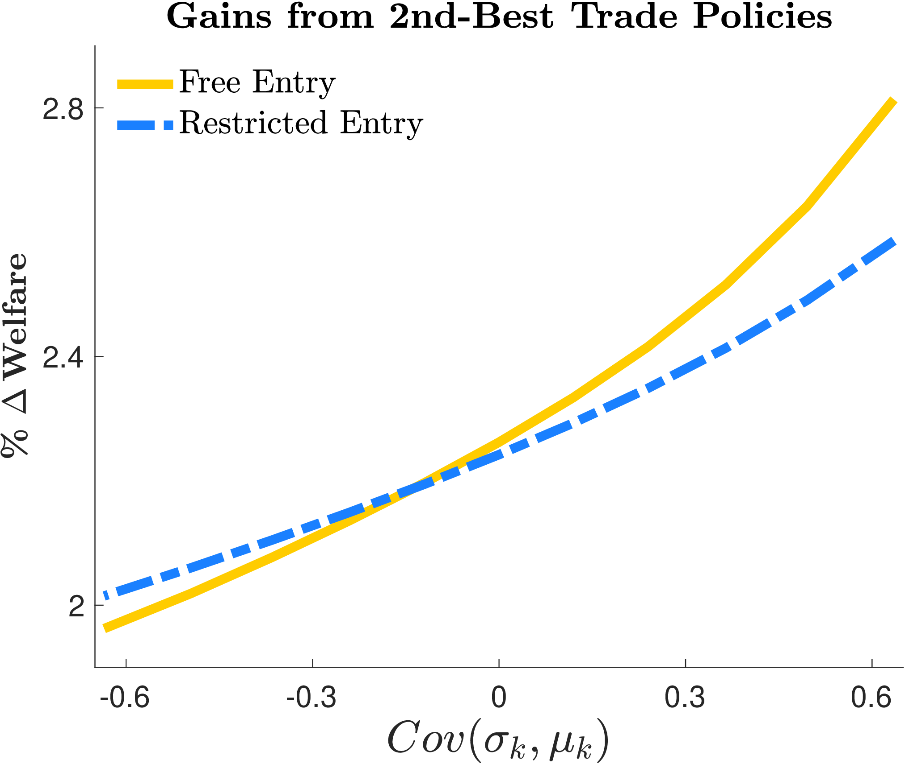
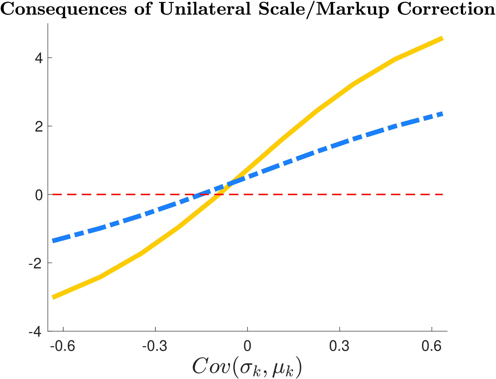
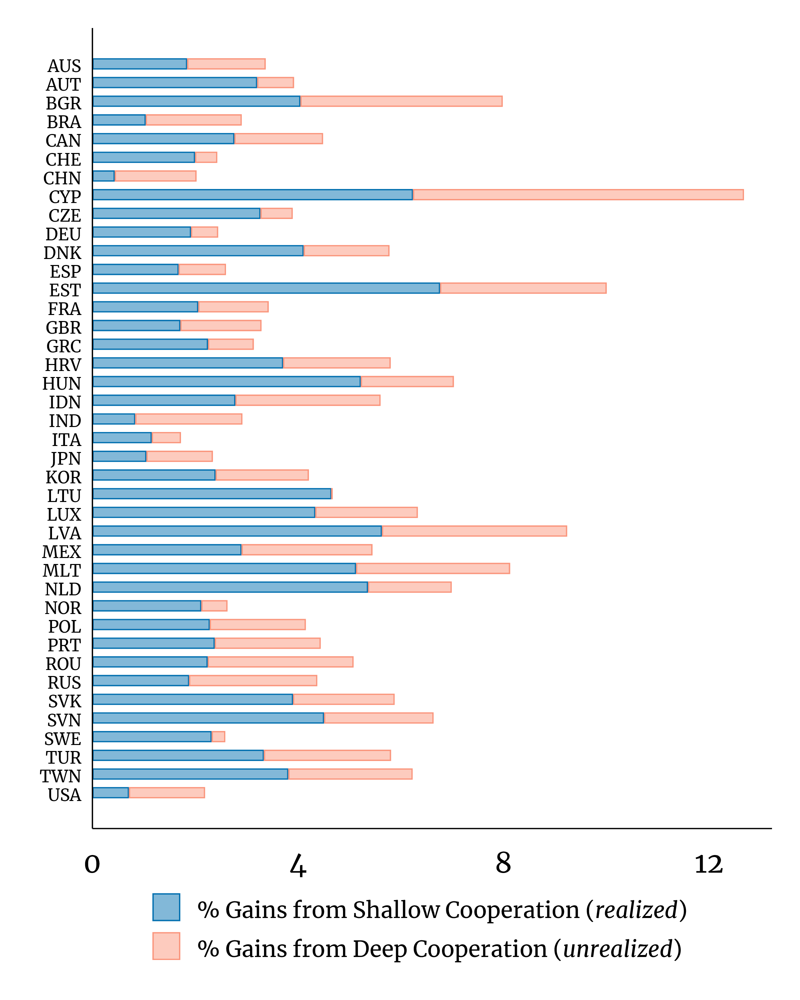
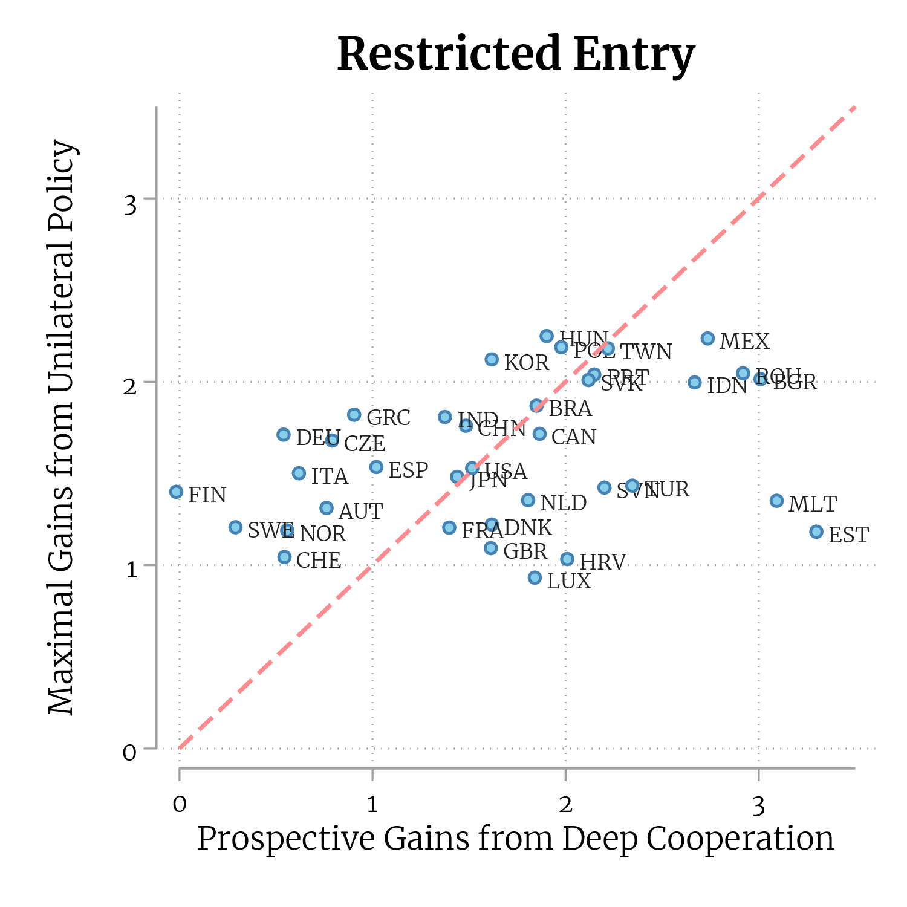
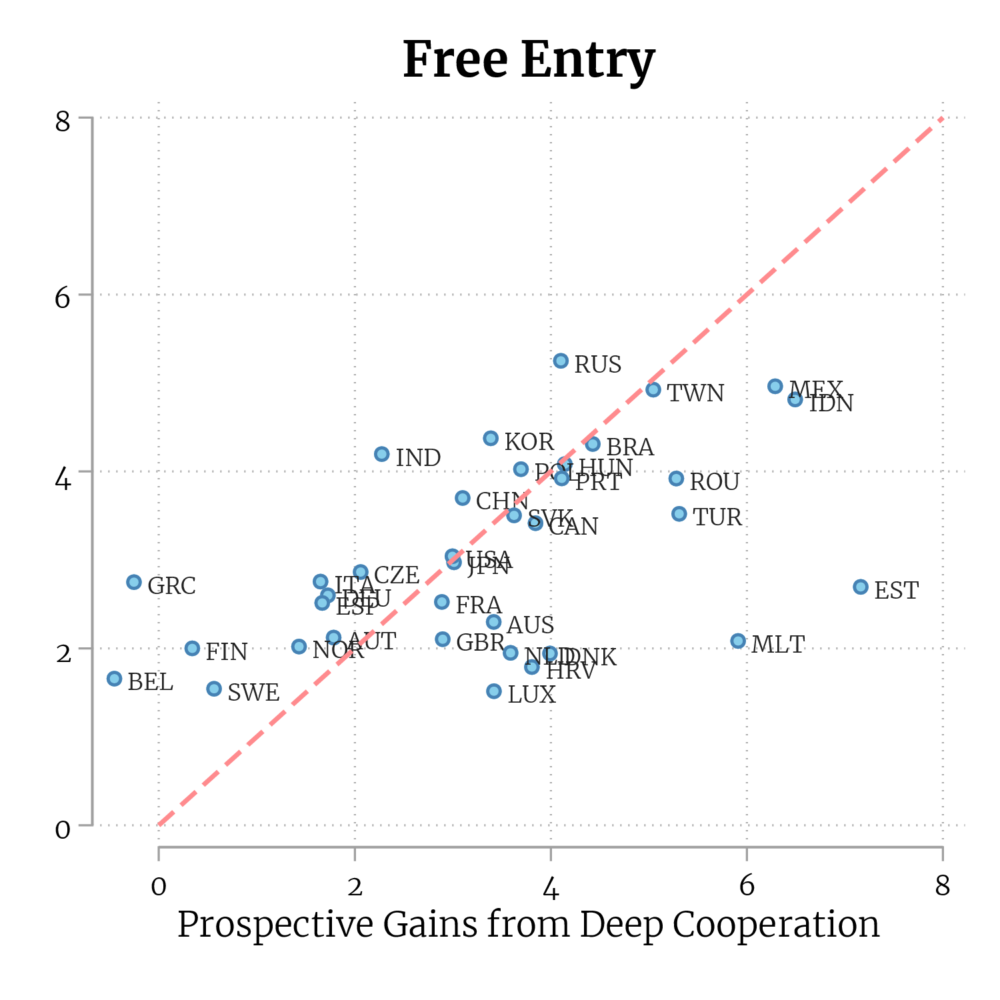

Profits, Scale Economies, and the Gains from Trade and Industrial Policy
Ahmad Lashkaripour (Indiana University)
Volodymyr Lugovskyy (Indiana University)
American Economic Review · October 2023
Read PDF · Markdown source · Reader view · Published version · Slides · Online appendix
Abstract. This paper examines the efficacy of second-best trade restrictions at correcting sectoral misallocation due to scale economies or profit-generating markups. To this end, we characterize optimal trade and industrial policies in an important class of quantitative trade models with scale effects and profits, estimating the structural parameters that govern policy outcomes. Our estimates reveal that standalone trade policy measures are remarkably ineffective at correcting misallocation, even when designed optimally. Unilateral adoption of corrective industrial policies is also ineffective due to immiserizing growth effects. But industrial policies coordinated internationally via a deep agreement are more transformative than any unilateral policy alternative.
The United States will likely adopt an explicit industrial policy in the coming decade. Similar developments are well underway in other countries (Aiginger and Rodrik (2020)). And with industrial policy back on the scene, we are witnessing a revival of old-but-questionable trade policy practices. Govenments are often turning to protectionist trade policy measures to pursue their industrial policy objectives—as manifested by the United States National Trade Council’s mission or the Chinese, Made in China 2025 initiative.See Bhagwati (1988) and Irwin (2017) for a historical account of trade restrictions being used by governments to promote their preferred industries. A prominent example dates back to 1791, when Alexander Hamilton approached Congress with “the Report on the Subject of Manufactures,” encouraging the implementation of protective tariffs and industrial subsidies. These policies were intended to help the US economy catch up with Britain.
These developments have sparked new interest in old-but-open questions regarding trade and industrial policy. For instance: \(\boldsymbol {(i)}\) Is trade policy an effective tool for correcting misallocation in the domestic economy? \(\boldsymbol {(ii)}\) If not, should governments undertake unilateral domestic policy interventions to correct misallocation? or \(\boldsymbol {(iii)}\) should they coordinate their industrial policies via a deep trade agreement?
To answer these questions, we characterize optimal trade and industrial policies in an important class of multi-industry, multi-country quantitative trade models where misallocation occurs due to scale economies or profit-generating markups. Guided by theory, we estimate the key parameters that govern the welfare consequences of trade and industrial policy in open economies. We then combine our estimated parameters with optimal policy formulas to quantify the ex-ante gains from trade and industrial policy among 43 major countries.
Our estimation reveals that trade policy is remarkably ineffective at correcting misallocation, reflecting a deep tension between allocative efficiency and terms of trade. Unilateral adoption of corrective industrial policies can also backfire as it often triggers immiserizing growth. These considerations, we argue, may have spurred a global race to the bottom, wherein governments either avoid corrective industrial policies or pair them with hidden trade barriers. A deep agreement can remedy this problem and deliver welfare gains that are more transformative than any unilateral policy intervention.
Section 1 presents our theoretical framework. Our baseline model is a generalized multi-industry Krugman (1980) model that features a non-parametric utility aggregator across industries and a nested CES utility aggregator within industries. This specification has an appealing property wherein the degrees of firm-level and country-level market love-for-variety can diverge. We analyze both the restricted and free entry cases of the model to distinguish between the short-run and long-run consequences of policy. With a reinterpretation of parameters, our baseline framework also nests \((a)\) the multi-industry Melitz (2003)-Pareto model, and \((b)\) the multi-industry Eaton and Kortum (2002) model with industry-level Marshallian externalities. We later extend our baseline model to accommodate non-parametric input-output linkages.
Section 2 derives sufficient statistics formulas for first-best and second-best trade and industrial policies. Unilaterally optimal policies in our framework pursue two objectives: First, they seek to improve the home country’s terms-of-trade (ToT) vis-à-vis the rest of the world. Second, they seek to restore allocative efficiency in the domestic economy by reallocating workers towards high-returns to scale or high-profit industries.
The first-best optimal policy consists of misallocation-blind import tariffs and export subsidies that purely maximize ToT gains. Allocative efficiency under the first-best is restored via domestic Pigouvian subsidies.The optimal subsidy rate in each industry equals the inverse of the industry-level scale elasticity or markup. While these insights resonate with the targeting principle, our optimal policy formulas have other implications worth highlighting. First, even though 1st-best trade policies are blind to misallocation (the dispersion in scale elasticities), they depend on the overall strength of scale economies (the level of scale elasticities). Second, the optimal tariff formula is input-output-blind provided that export subsidies are assigned optimally.Specifically, optimal import tariffs are equal to the inverse export supply elasticity regardless of input-output relationships. Consequently, in the absence of profits and scale economies, optimal tariffs become uniform when export subsidies are set optimally—revealing that the uniformity result in Costinot et al. (2015) extends to environments with input-output linkages.
Our second-best trade policy formulas apply to scenarios where governments are reluctant to use industrial subsidies for correcting misallocation—the root of which could be political pressures or institutional barriers.Trade policy has been regularly used—in place of domestic industrial policy—to promote critical industries (Bhagwati (1988); Harrison and Rodríguez-Clare (2010); Irwin (2017)). Relatedly, see Lane (2020) for a historical account of various industrial policy practices around the world. Second-best trade tax-cum-subsidies are composed of two elements: a neoclassical ToT-improving component and a misallocation-correcting component. The former aims to restrict relative exports in nationally differentiated industries. The latter seeks to restrict imports and promote exports in high-returns-to-scale industries, mimicking the first-best Pigouvian subsidies.
Section 3, guided by our optimal policy framework, puts forth two conjectures concerning the efficacy of trade and industrial policy: First, if industry-level trade and scale elasticities exhibit a strong negative correlation, standalone trade policy measures deliver limited welfare gains even when set optimally—reflecting their inability to strike a balance between ToT-improving and misallocation-correcting objectives.In some canonical cases, optimal second-best trade policies are even industry-blind—unable to beneficially correct inter-industry misallocation or manipulate the ToT on an industry-by-industry basis. Second, in these conditions, unilateral scale (or markup) correction via industrial policy can cause immiserizing growth due to adverse ToT effects. Consequently, shallow trade agreements may be insufficient for reaching global efficiency. Once governments agree to abandon inefficient trade restrictions under a shallow agreement, they become tangled in a coordination game involving corrective industrial policies. The outcome of this game is a race to the bottom wherein governments are reluctant to implement corrective industrial policies without violating their commitments to free trade. A deep agreement can remedy this problem.
To test these conjectures, Section 5 estimates the structural parameters necessary for ex-ante policy evaluation. Our optimal policy formulas reveal that the sufficient statistics for measuring policy outcomes include observables and two sets of parameters: \((i)\) industry-level scale elasticities that govern the extent of misallocation and \((ii)\) industry-level trade elasticities that control the scope for ToT manipulation. In our generalized Krugman (1980) model, scale elasticities reflect the degree of love-for-variety whose social benefits are not internalized by firms’ entry decisions; and trade elasticities represent the degree of national product differentiation. We recover both elasticities from firm-level demand parameters, which are estimated by fitting a structural demand function to the universe of Colombian import transactions covering over 225,000 firms from 251 countries. Our identification strategy leverages high-frequency data on import transactions and exchange rates to construct a shift-share instrument that measures exposure to aggregate exchange rate fluctuations at the firm-product-year level.We develop this identification strategy to overcome challenges that are difficult to resolve with standard demand estimation techniques. Firm-level demand estimation techniques from the Industrial Organization literature leverage information on observed product characteristics, which are unavailable at the scale we conduct our estimation. Also, unlike traditional country-level import demand estimations, we cannot rely on tariff data for identification, as tariff rates do not vary sufficiently among firms from the same country. This estimation strategy is well-suited for our end goal of policy evaluation as it separately identifies the scale elasticities from trade elasticities, accurately pinpointing their covariance.
Section 6 combines our estimated scale and trade elasticity parameters, our optimal policy formulas, and macro-level data from the 2014 World Input-Output Database to quantify the (maximal) ex-ante gains from policy among 43 major economies. Our analysis delivers three main findings.
First, we find that trade policy is remarkably ineffective at correcting misallocation in the domestic economy—even without factoring in the cost of retaliation by trading partners. Under free entry, second-best export subsidies and import taxes can raise the average country’s real GDP by only 1.19%, which amounts to less than \(\frac{4}{10}\) of the gains attainable under the unilaterally first-best policy. Third-best import taxes are even less effective as a standalone policy, raising real GDP by a mere 0.63%. These findings corroborate the argument that trade policy has difficulty striking a balance between ToT and misallocation-correcting objectives.
Second, the unilateral adoption of corrective industrial policies triggers severe immiserizing growth in most countries. The average country’s real GDP declines by 2.7% if they implement scale-correcting subsidies without reciprocity by trading partners. Aversion to these consequences, we argue, may have spurred a global race to the bottom in industrial policy implementation. To escape immiserizing growth, governments either avoid corrective policies or pair them with hidden trade barriers that breach shallow trade cooperation.The Chinese government, for instance, pairs its domestic subsidies with hidden export taxes. These hidden barriers are applied via partial value-added tax rebates and are designed to restore China’s ToT (Garred (2018)).
Third, deep agreements can remedy the race to the bottom and deliver welfare gains that are more transformative than any unilateral intervention. To offer some perspective, corrective industrial policies coordinated via a deep agreement can elevate the average country’s real GDP by 3.2%. These welfare gains rival the already-realized gains from shallow agreements for most countries. They, moreover, exceed any welfare gains achievable through unilateral trade or industrial policy interventions—even not considering that unilateralism often backfires in the form of retaliation by trading partners.
Related Literature—Our theory relates to an emerging literature on optimal policy in distorted open economies. In a concurrent paper, Bartelme et al. (2019) characterize the first-best optimal policy for a small open economy in a multi-sector Ricardian model with Marshallian externalities. Relatedly, Haaland and Venables (2016) characterize optimal policy for a small open economy in two-by-two Krugman and Melitz models.Demidova and Rodriguez-Clare (2009) and Felbermayr, Jung and Larch (2013) characterize optimal tariffs in a single industry Melitz-Pareto model. The single industry assumption ensures that markets are efficient (Dhingra and Morrow (2019)) and import and export taxes are equivalent (the Lerner symmetry). So, the unilaterally first-best can be reached with import tariffs alone. Costinot, Rodríguez-Clare and Werning (2016) examine optimal policy in the single industry Melitz-Pareto model from a different lens, characterizing optimal firm-level taxes. Beyond optimal policy, Campolmi, Fadinger and Forlati (2018) employ a two-sector Melitz-Pareto model to elucidate the trade-offs facing countries that join shallow and deep trade agreements.Other papers have also used new or quantitative trade models to analyze piecemeal policy reforms in distorted economies or optimal policy in non-distorted economies—e.g., Costinot and Rodríguez-Clare (2014); Campolmi, Fadinger and Forlati (2014); Costinot et al. (2015); Bagwell and Lee (2018); Caliendo et al. (2015); Demidova (2017); Beshkar and Lashkaripour (2019, 2020). Our analysis of second-best trade policies speaks to an older literature emphasizing the firm-delocation rationale for trade restrictions (e.g., Venables (1987); Ossa (2011)), and supplements Bagwell and Staiger’s (2001; 2004) result about the role of trade agreements in distorted economies. We also build on Kucheryavyy, Lyn and Rodríguez-Clare (2023) to establish isomorphism between our baseline model and other workhorse models in the literature. Our quantitative examination of trade and industrial policy connects to two strands of literature. First, a mature line of research measuring the ex-post consequences of tariff cuts (Costinot and Rodríguez-Clare (2014); Caliendo and Parro (2015); Ossa (2014, 2016); Spearot (2016)). Second, a growing literature examining the ex-ante consequences of optimal policy. Ossa (2014), most notably, quantifies the consequences of cooperative and non-cooperative import tariffs in a multi-industry Krugman model with restricted entry. Lastly, our work relates to a vibrant literature examining the impacts of exogenous trade shocks in distorted economies (e.g., De Blas and Russ (2015); Edmond, Midrigan and Xu (2015); Baqaee and Farhi (2019)).
We contribute to the calculus of optimal policy in open economies by developing a new dual technique for optimal policy derivation in general equilibrium quantitative trade models with many countries, increasing returns-to-scale production technologies, and input-output linkages. Our approach has applications beyond those considered in this paper. Lashkaripour (2021), for instance, adopts a special case of this technique to characterize Nash tariffs in a monopolistic competition model with restricted entry.Lashkaripour (2021) examines the cost of non-cooperative import restrictions when governments simultaneously apply their 3rd-best optimal import tariffs. To expedite the computational process, Lashkaripour (2021) uses analytic formulas for Nash tariffs, which correspond to a special of our Theorem 3.Farrokhi and Lashkaripour (2021) extend this technique to analyze optimal carbon pricing under international climate externalities.
Lastly, our paper supplements the broader quantitative trade literature by developing an estimation technique that separately identifies the scale elasticity from the trade elasticity in certain environments. Our indirect approach to scale elasticity estimation complements the direct method concurrently proposed by Bartelme et al. (2019). The main limitation of our indirect approach is that it cannot detect scale externalities unrelated to love-for-variety, as it does not directly leverage scale-related moments. Despite this limitation, our approach has two useful properties for policy evaluation. First, it separately identifies the trade elasticity from the scale elasticity, provided that scale economies arise from love-for-variety, which is valuable since the covariance between these elasticities regulates policy outcomes. Second, our approach is robust to the presence of quasi-fixed production inputs, enabling us to isolate scale effects that impair allocative efficiency from fixed-input-driven diseconomies of scale.
1 Theoretical Framework
Our baseline model is a generalized multi-industry, multi-country Krugman model with semi-parametric preferences. In Section 4 we show that our theory readily applies to alternative models featuring firm-selection à la Melitz–Chaney and external economies of scale à la Kucheryavyy, Lyn and Rodríguez-Clare (2023). We also extend our theory later to accommodate arbitrary input-output networks and political economy pressures.
We consider a world economy consisting of multiple countries and industries. Countries are indexed by of \(i,j,n\in \mathbb {C}\). Industries are indexed by \(g,k\in \mathbb {K}\). Industries can differ in fundamentals such as the degree of scale economies or trade elasticity. Each country \(i\in \mathbb {C}\) is populated by \(L_{i}\) individuals who supply one unit of labor inelasticity. Labor is the sole primary factor of production in each economy. Workers cannot relocate between countries but are perfectly mobile across industries within a country, and are paid a country-wide wage, \(w_{i}\).
1.1 Preferences
Each good in our model is indexed by a triplet, which signifies its location of production (origin), it
location of final consumption (destination), and the industry under which the good is classified. To give an
example: Good “\(ji,k\) ” denotes a good corresponding to origin country \(j\)–destination country \(i\)–industry \(k\).
Cross-Industry Demand.\(\quad\) The representative consumer in country \(i\in \mathbb {C}\) faces a vector of industry-level consumer
price indexes \(\mathbf{\tilde {\mathbf{P}}}_{i}=\{\tilde {P}_{i,k}\}\), where index \(\tilde {P}_{i,k}\equiv \tilde {P}_{i,k}(\tilde {P}_{1i,k},...,\tilde {P}_{Ni,k})\) aggregates over industry \(k\) goods sourced from various origins. The consumer
chooses their demand for industry-level bundles \(\mathbf{Q}_{i}\equiv \{Q_{i,k}\}\) to maximize a non-parametric utility function
subject to a budget constraint. This choice yields an indirect utility, which is a function of the
consumer’s income, \(Y_{i}\), and the vector of industry-level “consumer” price indexes in market \(i\), \(\tilde {\mathbf{P}}_{i}\):
Throughout this paper, the tilde notation on price is used to distinguish between “consumer” and
“producer” prices. The former includes taxes, whereas the latter does not. this problem yields an
industry-level Marshallian demand function, which we denote by \(Q_{i,k}=\mathcal {D}_{i,k}\left (Y_{i},\tilde {\mathbf{P}}_{i}\right )\). This function tracks how (given prices
and total income) consumers allocate their expenditure across industries. A special case of our
general cross-industry demand function is the Cobb-Douglas case, wherein \(U_{i}(\mathbf{Q}_{i})=\prod _{k\in \mathbb {K}}Q_{i,k}^{e_{i,k}}\) implying that \(Q_{i,k}=e_{i,k}Y_{i}/\tilde {P}_{i,k}\).
Within-Industry Demand.\(\quad\) Each industry-level bundle aggregates over various origin-specific composite
varieties: \(Q_{i,k}\equiv Q_{i,k}(Q_{1i,k},...,Q_{Ni,k})\). Each origin-specific composite variety, itself, aggregates over multiple firm-level
varieties: \(Q_{ji,k}\equiv Q_{ji,k}(\mathbf{q}_{ji,k})\), where \(\mathbf{q}_{ji,k}=\left \{ q_{ji,k}\left (\omega \right )\right \} _{\omega \in \Omega _{j,k}}\) is a vector with each element \(q_{ji,k}\left (\omega \right )\) denoting the quantity consumed of firm \(\omega\)’s
output.\(\Omega _{j,k}\) denotes the set of all firms operating in origin \(j\)–industry \(k\). In our baseline model, firms do not incur a fixed exporting cost, so each firm in \(\Omega _{j,k}\) serves market \(i\). We relax this assumption in Section 4.
We assume that the within-industry utility aggregator has a nested-CES structure, which enables us to
abstract from variable markups and direct our attention to the scale-driven and profit-shifting effects of
policy.
Assumption (A1).\(\,\) The within-industry utility aggregator is nested-CES. In particular,
with \(\gamma _{k}\geq \sigma _{k}>1\) and \(\varphi _{ji,k}(\omega )>0\) corresponding to a constant variety-specific taste shifter.
Based on (A1), the demand for the composite national-level variety \(ji,k\) (origin country \(j\)–destination country \(i\)–industry \(k\)) is given by
where \(\tilde {P}_{ji,k}\) and \(\tilde {P}_{i,k}\) respectively denote the origin-specific and industry-level CES price indexes.Namely, \(\tilde {P}_{ji,k}=\left (\sum _{\omega \in \Omega _{ji,k}}\varphi _{ji,k}(\omega )\tilde {p}_{ji,k}\left (\omega \right )^{1-\gamma _{k}}\right )^{\frac {1}{1-\gamma _{k}}}\) and \(\tilde {P}_{i,k}=\left (\sum _{j\in \mathbb {C}}\tilde {P}_{ji,k}^{1-\sigma _{k}}\right )^{\frac {1}{1-\sigma _{k}}}\). Recall that \(Q_{i,k}\) denotes industry-level demand, which is given by \(Q_{i,k}=\mathcal {D}_{i,k}\left (Y_{i},\tilde {\mathbf{P}}_{i}\right )\). The demand facing individual firms from country \(j\) is, accordingly, given by
Importantly, the above parameterization of demand allows for the
firm-level and national-level degrees of market power to diverge. \(\gamma _{k}\) governs the degree of firm-level market
power and love-for-variety, while \(\sigma _{k}\) governs the degree of national-level market power in industry \(k\).
Elasticity of Demand Facing National-Level Varieties.\(\quad\) Following Equation 1, the demand for aggregate
variety \(ji,k\) is a function of total income in market \(i\), \(Y_{i}\), and the entire vector of origin\(\times\) industry-specific
consumer price indexes in that market: Namely, \(Q_{ji,k}=\mathcal {D}_{ji,k}\left (Y_{i},\tilde {\mathbf{P}}_{i}\right )\). To keep track of changes in demand, we define
the elasticity of demand for national-level variety \(ji,k\) w.r.t. to the price of variety \(ni,g\) as follows:
Under Cobb-Douglas preferences (i.e., zero cross-substitutability between industries), the national-level demand elasticities are fully determined by the upper-tier CES parameter \(\sigma _{k}\) and national-level expenditure shares. Specifically, \(\varepsilon _{ji,k}^{\jmath i,g}=0\) if \(g\neq k\), while
where \(\lambda _{ji,k}\equiv \tilde {P}_{ji,k}Q_{ji,k}/\sum _{\jmath }\tilde {P}_{\jmath i,k}Q_{\jmath i,k}\) denotes the (within-industry) share of expenditure on \(ji,k\). In the presence of cross-substitutability between industries, the demand elasticity will feature an additional term that accounts for cross-industry demand effects.
In our setup, optimal policy internalizes the entire matrix of own- and cross-demand elasticities. To
present our optimal policy formulas concisely, we use the following matrix notation to track the elasticity
of demand w.r.t. goods sourced from various origins and industries.
Definition (D1).\(\,\) Let \(K=\left |\mathbb {K}\right |\) denote the number of industries. The \(K\times K\) matrix \(\mathbf{E}_{ji}^{(ni)}\) describes the elasticity of demand
for origin \(j\in \mathbb {C}\) goods w.r.t. the price of origin \(n\in \mathbb {C}\) goods in market \(i\):
To simplify the notation, we use \(\mathbf{E}_{ji}\sim \mathbf{E}_{ji}^{(ji)}\) to denote the elasticity of origin \(j\) goods w.r.t. origin \(j\) prices, and use the \(K\times (N-1)K\) matrix, \(\mathbf{E}_{ji}^{(-ii)}=\left [\mathbf{E}_{ji}^{(ni)}\right ]_{n\neq i}\), to summarize the elasticity of demand for origin \(j\) goods w.r.t. price of all import varieties in market \(i\) (i.e., all varieties source from any origin \(n\neq i\)). Important for our analysis, \(\mathbf{E}_{ji}\) is an invertible matrix—the proof of which is provided in the online appendix using the primitive properties of Marshallian demand.
1.2 Production and Firms
Each economy \(i\in \mathbb {C}\) is populated with a mass \(M_{i,k}=\left |\Omega _{i,k}\right |\) of single-product firms in industry \(k\in \mathbb {K}\) that compete under monopolistic competition. Labor is the only factor of production. Firm entry into industry \(k\) is either free or restricted. Under restricted entry, \(M_{i,k}=\overline {M}_{i,k}\) is invariant to policy. Under free entry, a pool of ex-ante identical firms can pay an entry cost \(w_{i}f_{k}^{e}\) to serve industry \(k\) from origin \(i\). After paying the entry cost, each firm \(\omega \in \Omega _{i,k}\) draws a productivity \(z(\omega )\geq 1\) from distribution \(G_{i,k}\left (z\right )\), and faces a marginal cost \(\tau _{ij,k}w_{i}/z\left (\omega \right )\) for producing and delivering goods to destination \(j\in \mathbb {C}\), where \(\tau _{ij,k}\) denotes a flat iceberg transport cost. Collecting these assumptions, the “producer” price index of composite good \(ij,k\) (which aggregates over firm-level varieties associated with origin \(i\)–destination \(j\)–industry \(k\)) is
where \(\bar {a}_{i,k}\equiv \left [\int _{1}^{\infty }z^{\gamma _{k}-1}dG_{i,k}(z)\right ]^{\frac {1}{1-\gamma _{k}}}\) denotes the average unit labor cost in origin \(i\).Notice that \(\bar {a}_{i,k}\) is constant in our baseline model. This is no longer true in the Melitz (2003) extension of oue model explored in Section 4, in which firms incur a fixed cost to serve individual markets. Following Kucheryavyy, Lyn and Rodríguez-Clare (2023), we refer to \(\frac {1}{\gamma _{k}-1}=-\frac {\partial \ln P_{ij,k}}{\partial \ln M_{i,k}}\) as the industry-level scale elasticity:
Considering Equation 3, \(\mu _{k}\) represents both \((a)\) the constant firm-level markup in industry \(k\) (i.e., \(1+\mu _{k}=\frac {\gamma _{k}}{\gamma _{k}-1}\)), and \((b)\) the
elasticity by which (variety-adjusted) TFP increases with industry-level employment \(L_{i,k}\) (noting that
\(L_{i,k}\propto M_{i,k}\)).With free entry and constant markups, it follows immediately that \(L_{i,k}=\bar {c}_{i,k}M_{i,k}\) where \(\bar {c}_{i,k}\) is a constant. The
equivalence between markup and scale elasticity is not a universal property but a specific feature of our
baseline Krugman model. We take advantage of this equivalence to simplify notation, but it is not
essential for the theoretical results that follow. As shown in Section 4, our analytical formulas for
optimal policy extend to alternative models where the scale elasticity and markup levels diverge.
Expressing Producer Prices in terms of Profit-Adjusted Wages.\(\quad\) Our optimal policy framework reveals a
tight connection between the restricted and free entry cases—even though misallocation stems from
markup distortions in the former and scale distortions in the latter. To illustrate this connection and
integrate optimal policy results for the two cases, we specify producer prices as a function of
profit-adjusted wage rates. The idea is that net profits (if any) are rebated back to workers. The
profit-adjusted wage rate in country \(i\) is defined as
where \(\overline {\mu }_{i}\) denotes economy \(i\)’s average profit margin across all industries. Namely,
Under free entry, profits are drawn to zero, resulting in \(\overline {\mu }_{i}=0\). Under restricted entry, the average profit margin is positive and depends on the industrial composition of country \(i\)’s output—with a higher \(\overline {\mu }_{i}\) reflecting more sales in high-markup (high-\(\mu\)) industries. Appealing to our definitions for \(\grave {w}_{i}\) and \(\mu _{k}\), we can reformulate Equation 3 to express producer prices as a function of profit-adjusted wages:
In the above formulation, \(\varrho _{ij,k}\equiv \left (1+\mu _{k}\right )\tau _{ij,k}\bar {a}_{i,k}^{\frac {1}{1+\mu _{k}}}\left (\mu _{k}/f_{k}^{e}\right )^{\frac {-\mu _{k}}{1+\mu _{k}}}\) and \(\varrho '_{ij,k}\equiv \tau _{ij,k}\bar {a}_{i,k}\bar {M}_{i,k}^{-\mu _{k}}\) are constant price shifters; and \(\sum _{j\in \mathbb {C}}\left [\tau _{ij,k}Q_{ij,k}\right ]\) denotes origin \(i\)–industry \(k\)’s gross output.Under free entry, the total cost of entry must equal gross profits across all markets. I particular,\[w_{i}f_{k}^{e}M_{i,k}=\sum _{j\in \mathbb {C}}\left [\frac {\mu _{k}}{1+\mu _{k}}P_{ij,k}Q_{ij,k}\right ]\qquad \qquad \left (\text{Free Entry Condition}\right ).\] Replacing \(P_{ij,k}\) in the above equation with 3 yields \(M_{i,k}=\left (\frac {\mu _{k}}{f_{k}^{e}}\sum _{j}\left [\bar {a}_{ij,k}Q_{ij,k}\right ]\right )^{\frac {1}{1+\mu _{k}}}\). Equation 5, then, follows from plugging the expression for \(M_{i,k}\) back into Equation 3. As we explain shortly, the above formulation of producer prices is useful for tracking the terms-of-trade gains from policy in open economies. These gains require a contraction of producer prices in the rest of world, which can occur through alterations to production scale,\(\sum _{j\in \mathbb {C}}\left [\tau _{ij,k}Q_{ij,k}\right ]\), under free entry or average profit margins, \(\overline {\mu }_{i}\), under restrict entry.
1.3 The Instruments of Policy
The government in country \(i\) has is afforded a complete set of revenue-raising trade and domestic policy instruments; namely,
- 1.
- import tax, \(t_{ji,k}\), applied to all goods imported from origin \(j\neq i\) in industry \(k\);
- 2.
- export subsidy, \(x_{ij,k}\), applied to all goods sold to market \(j\neq i\) in industry \(k\);
- 3.
- industrial subsidy, \(s_{i,k}\), applied to industry \(k\)’s output irrespective of where it is sold.
Our specification of policy is quite flexible as it accommodates import subsidies or export taxes (\(-1\leq t<0\) or \(-1\leq x<0\)) as well as production taxes (\(-1\leq s<0\)). We disregard consumption taxes as they are redundant given the availability of the other tax instruments (see the online appendix). There is a simple intuition behind this redundancy: Country \(i\in \mathbb {C}\) has access to \(2(N-1)+2\) different tax instruments in each industry (where \(N\equiv \left |\mathbb {C}\right |\) denotes the number of countries). These \(2(N-1)+2\) tax instruments can directly manipulate \(2(N-1)+1\) consumer price indexes: \(N-1\) export prices, \(N-1\) import prices, and one price associated with the domestically-produced and consumed variety (namely, \(\tilde {P}_{ii,k}\)). So, by construction, one of the \(2(N-1)+2\) tax instruments in each industry is redundant. Here, we treat the industry-level consumption tax as a redundant instrument.With more than two countries (\(N>2)\), Country \(i\) has access to \(2(N-1)+2\) instruments per industry. These instruments can manipulate \(2(N-1)+1\) price variables, which implies the same redundancy.
The above tax instruments create a wedge between consumer price indexes, \(\{\tilde {P}_{ji,k}\}\) and producer price indexes, \(\{P_{ji,k}\}\), as follows:
These tax instruments also generate/exhaust revenue for the tax-imposing country. The combination of all taxes imposed by country \(i\in \mathbb {C}\) produce a tax revenue equal to
Tax revenues are rebated to the consumers in a lump-sum fashion. After we account for tax revenues, total income in country \(i\) equals the sum of profit-adjusted wage payments, \(\grave {w}_{i}L_{i}=(1+\overline {\mu }_{i})w_{i}L_{i}\), and tax revenues. Namely, \(Y_{i}=\grave {w}_{i}L_{i}+\mathcal {R}_{i}\), where \(\mathcal {R}_{i}\) can be positive or negative depending on whether country \(i\)’s policy consists of net taxes or subsidies.
1.4 General Equilibrium
For convenience, we refer to profit-adjusted wages as just wages going forward, using \(\mathbf{w}\equiv \{\grave {w}_{i}\}\) to denote the global
vector of wages. We also assume throughout the paper that the underlying parameters of the model
are such that the necessary and sufficient conditions for the uniqueness of equilibrium are
satisfied.Following Kucheryavyy, Lyn and Rodríguez-Clare (2023), this assumption holds in the two country case if \(\gamma _{k}\geq \sigma _{k}\) and holds otherwise if trade costs are sufficiently small.
To present our theory, we express all equilibrium outcomes (except wages) as an explicit function of global
taxes (\(\mathbf{x}\), \(\mathbf{t}\), and \(\mathbf{s}\)) and wages \(\mathbf{w}\), with the understanding that \(\mathbf{w}\) is itself an equilibrium outcome. As detailed in
the online appendix, this formulation derives from solving a system that imposes all equilibrium
conditions aside from the labor market clearing conditions. For future reference, we outline this
formulation of equilibrium variables below.
Notation.\(\,\) For a given vector of taxes and wages \(\mathbf{T}=(\mathbf{t},\mathbf{x},\mathbf{s};\mathbf{w})\), equilibrium outcomes \(Y_{i}(\mathbf{T})\), \(P_{ji,k}(\mathbf{T})\), \(\tilde {P}_{ji,k}(\mathbf{T})\), \(Q_{ji,k}(\mathbf{T})\) are determined such that \((i)\)
producer prices are characterized by Equation 5; \((ii)\) consumer prices are given by Equation 6; \((iii)\)
industry-level consumption choices are a solution to with demand for national-level varieties, \(Q_{ji,k}\),
given by Equation 1; and \((iv)\) total income (which dictates total expenditure by country \(i\)) equals
profit-adjusted wage payments plus tax revenues:
where tax revenues \(\mathcal {R}_{i}(\mathbf{T})\) are described by Equation .
Considering the above formulation of equilibrium variables, welfare, too, can be expressed as an explicit function of taxes and wages, \(\mathbf{T}=(\mathbf{t},\mathbf{x},\mathbf{s};\mathbf{w})\). Namely,
Since \(\mathbf{w}\) is itself an equilibrium outcome, vector \(\mathbf{T}=(\mathbf{t},\mathbf{x},\mathbf{s};\mathbf{w})\) is feasible
iff \(\mathbf{w}\) is the equilibrium wage consistent with \(\mathbf{t}\), \(\mathbf{x}\), and \(\mathbf{s}\). Accordingly, our objective in this paper is to study
problems where the government in \(i\) choses \(\mathbf{T}=(\mathbf{t},\mathbf{x},\mathbf{s};\mathbf{w})\) to maximize \(W_{i}\left (\mathbf{T}\right )\) subject to the noted feasibility constraint, which
is formally defined below.
Definition (D2).\(\,\) The set of feasible policy–wage vectors, \(\mathbb {F}\), consists of any vector \(\mathbf{T}=(\mathbf{t},\mathbf{x},\mathbf{s};\mathbf{w})\) where \(\mathbf{w}\) satisfies the
labor market clearing condition in every country, given \(\mathbf{t}\), \(\mathbf{x}\), and \(\mathbf{s}\):
There is a basic reason for why we formulate equilibrium outcomes as a function of \(\mathbf{T}=(\mathbf{t},\mathbf{x},\mathbf{s};\mathbf{w})\) instead of just \((\mathbf{t},\mathbf{x},\mathbf{s})\). This choice of formulation allows us to articulate an important intermediate result regarding tax neutrality. This result, which is stated below, simplifies our theoretical derivation of optimal policy to a great degree.
Lemma 1 [Tax Neutrality]For any \(a\) and \(\tilde {a}\in \mathbb {R}_{+}\) \((i)\) if \(\mathbf{T}=(\boldsymbol {1}+\mathbf{t}_{i},\mathbf{t}_{-i}\),\(\boldsymbol {1}+\mathbf{x}_{i},\mathbf{x}_{-i},\boldsymbol {1}+\mathbf{s}_{i},\mathbf{s}_{-i};\grave {w}_{i},\mathbf{w}_{-i})\in \mathbb {F}\), then \(\mathbf{T}'=(a(\boldsymbol {1}+\mathbf{t}_{i}),\mathbf{t}_{-i},a(\boldsymbol {1}+\mathbf{x}_{i}),\mathbf{x}_{-i},\frac {1}{\tilde {a}}(\boldsymbol {1}+\mathbf{s}_{i}),\mathbf{s}_{-i};\frac {a}{\tilde {a}}\grave {w}_{i},\mathbf{w}_{-i})\in \mathbb {F}\). Moreover, \((ii)\) welfare is preserved under \(\mathbf{T}\) and \(\mathbf{T}'\): \(W_{n}(\mathbf{T})=W_{n}(\mathbf{T}')\) for all \(n\in \mathbb {C}\).
The above lemma is proven in the online appendix, and connects two fundamental tax neutrality principles: The Lerner symmetry (Lerner (1936); Costinot and Werning (2019)) and the welfare-neutrality of uniform subsidies or markups (Lerner (1934); Samuelson (1948)). Importantly, Lemma 1 implies that there are multiple optimal tax combinations for each country \(i\)—a result that simplifies our forthcoming task of characterizing optimal policy. To give some detail: The contribution of general equilibrium wage and income effects to the optimal tax schedule is often summarized by aggregate tax-shifters that are industry-blind. The neutrality established by Lemma 1, simplifies the task of handling of these aggregate terms.
| Variable | Description |
| \(\tilde {P}_{ji,k}\) | Consumer price index (origin \(j\)–destination \(i\)–industry \(k\)) |
| \(P_{ji,k}\) | Producer price index (origin \(j\)–destination \(i\)–industry \(k\)) |
| \(Y_{i}\) | Total income in country \(i\) |
| \(\mathcal {R}_{i}\) | Total tax revenue in country \(i\) (the corresponding equation) |
| \(w_{i}\) and \(\grave {w}_{i}\) | pure and profit-adjusted wage rates in country \(i\): \(\grave {w}_{i}=(1+\overline {\mu }_{i})w_{i}\) |
| \(x_{ji,k}\) | Export subsidy applied to good \(ji,k\) (if \(j\neq i\)) |
| \(t_{ji,k}\) | Import tax applied on good \(ji,k\) (if \(j\neq i\)) |
| \(s_{i,k}\) | Industrial subsidy applied to all goods from origin \(i\)–industry \(k\) |
| \(\lambda _{ji,k}\) | Within-industry expenditure share (good \(ji,k\)): \(\tilde {P}_{ji,k}Q_{ji,k}/\sum _{\jmath }\tilde {P}_{\jmath i,k}Q_{\jmath i,k}\) |
| \(r_{ji,k}\) | Within-industry sales share (good \(ji,k\)): \(P_{ji,k}Q_{ji,k}/\sum _{\iota }P_{j\iota,k}Q_{j\iota,k}\) |
| \(e_{i,k}\) | Industry-level expenditure share (destination \(i\)–industry \(k\)) |
| \(\rho _{i,k}\) | Industry-level sales share (origin \(i\)–industry \(k\)) |
| \(\mu _{k}\) | industry-level markup ˜ industry-level scale elasticity |
| \(\overline {\mu }_{i}\) | Average profit margin in origin \(i\) (Equation 4) |
| \(\sigma _{k}\) | Cross-national CES parameter ˜ (1 + trade elasticity) |
| \(\varepsilon _{ji,k}^{(ni,g)}\) | Elasticity of demand for good \(ji,k\) w.r.t. the price of \(ni,g\) |
| \(\omega _{ji,k}\) | Inverse of good \(ji,k\)’s supply elasticity (the corresponding equation) |
2 Sufficient Statistics Formulas for Optimal Policy
This section derives sufficient statistics formulas for optimal trade and industrial policies. These formulas are later employed to quantify the ex-ante gains from policy among many countries. Before proceeding to the derivation, let us review the two rationales for policy intervention in our setup. A non-cooperative, welfare-maximizing government seeks to \((i)\) restrict trade and reap unexploited terms-of-trade (ToT) gains vis-à-vis the rest of the world, and \((ii)\) correct misallocation in the domestic economy. Misallocation, notice, stems from the cross-industry heterogeneity in markups or scale elasticities, leading to inefficiently low output in high-profit or high-returns-to-scale (high-\(\mu\)) industries. A crucial difference between these policy objectives is that ToT manipulation is inefficient from a global standpoint, as it distorts international prices to transfer surplus from the rest of the world to the tax-imposing country.
2.1 Efficient Policy from a Global Standpoint
As a useful benchmark, we first characterize the efficient policy from a global standpoint. Efficient policies, by definition, are the solution to a central planner’s problem that maximizes global welfare via taxes and lump-sum international transfers. Let \(\delta _{i}\) denote the Pareto weight assigned to country \(i\) in the planner’s objective function. The globally efficient policy solves the following planning problem subject to the availability of lump-sum transfers:
Keep in mind that the above problem affords the planner enough instruments to obtain their first-best. Good-specific taxes allow the planner to restore allocative efficiency, while lump-sum transfers allow her to redistribute inter-nationally based on the Pareto weights, \(\delta _{i}\). This point is expanded on in the online appendix, were it is shown that the efficient tax policy involves zero trade taxes and Pigouvian subsidies that restore marginal-cost-pricing globally:To be specific, the implementation of the efficient allocation involves the above taxes plus lump-sum international transfers based on Pareto weights. The logic is that the planner maximizes global output by restoring marginal-cost pricing and redistributes the corresponding income gains between countries via efficient transfers. Absent transfers, implementing \(\left \{ \mathbf{t}^{\star },\mathbf{x}^{\star },\mathbf{s}^{\star }\right \}\) would deliver a Kaldor-Hicks improvement (Kaldor (1939); Hicks (1939)), but not necessarily a Pareto improvement relative to Laissez-faire—see online Appendix for more details.
The above characterization applies to both the free and restricted entry cases—with the understanding that \(\mu _{k}\) assumes different interpretations in each case. Appealing to this result, the online appendix establishes a basic point about international cooperation: Welfare-maximizing governments will settle on the efficient policy only if they are unable to influence consumer/producer prices in the rest of the world. Otherwise, they will defect to take advantage of terms-of-trade (ToT) gains. This result indicates that the pursuit of ToT gains is the sole reason welfare-maximizing governments deviate from efficient policy choices—at least when they are afforded sufficient policy instruments.This need not be true if government are prohibited from using domestic taxes and afforded only import tax instruments. Following Venables (1987) and Ossa (2011), welfare-maximizing governments will erect tariffs in that case, even if they perceive world prices as invariant to their policy choice. By doing so, they improve allocative efficiency in the domestic economy but impose a negative firm-delocation externality on the rest of the world. This result echos the argument in Bagwell and Staiger (2001, 2004), generalizing it to settings with many countries and differentiated industries.
In the next section, we characterize the unilaterally optimal policy of non-cooperative governments. This exercise elucidates two issues. First, it determines how governments deviate from the cooperative policy choice when ToT considerations are taken into account. Second, it clarifies how governments approach industrial policy when they view 1st-best Pigouvian subsidies as politically infeasible. Once we settle these two issues, we argue that the implementation of globally efficient policies requires both a “shallow agreement” to discipline trade policy choices and a “deep agreement” to coordinate industrial policy implementation.
2.2 Unilaterally Optimal Policy Choices
2.2.1 First-Best: Unilaterally Optimal Trade and Domestic Policies
We now characterize a non-cooperative country’s unilaterally optimal policy. We consider cases where a non-cooperative country \(i\in \mathbb {C}\) selects taxes, \(\mathbf{t}_{i}\equiv \{t_{ji,k}\}\), \(\mathbf{x}_{i}\equiv \{x_{ij,k}\}\), and \(\mathbf{s}_{i}\equiv \{s_{i,k}\}\), taking policy choices elsewhere as given. Countries in the rest of the world are passive in their use of taxes but actively maintain internal cooperation.One aspect of internal cooperation requires further clarification: Country \(i\)’s policy could, in principle, disrupt the balance of market access concessions in the rest of the world, leading to a deterioration of one cooperative country’s ToT relative to another. Cooperation within the rest of the world entails that these extraterritorial ToT effects be neutralized via buffers that preserve \(w_{n}/w_{j}\) for all \(n,j\neq i\)—see online Appendix for further details. We begin with the unilaterally first-best case where the government in \(i\) is afforded all possible tax instruments. The first-best unilaterally optimal policy solves the following problem:Given that the rest of the world is passive in their use of taxes (i.e.,\(\mathbf{t}_{-i}=\mathbf{x}_{-i}=\mathbf{s}_{-i}=\mathbf{0}\)), we condense the notation by specifying equilibrium variables as a function of only \(\left (\mathbf{t}_{i},\mathbf{x}_{i},\mathbf{s}_{i},\mathbf{w}\right )\).
We analytically solve Problem (P1) under both the restricted and free entry cases. We perceive the
restricted entry case to be a more appropriate benchmark if governments are concerned with short-run
gains from policy. The free entry case, on the other hand, is more relevant if governments are concerned
with long-run gains. These two cases exhibit an important difference: Producer prices respond
differently to contractions in export supply under restricted and free entry—as we elaborate next.
Conditional Export Supply Elasticity.\(\quad\) The terms-of-trade gains from policy, in our framework, channel
through changes in the price of imported and exported goods. The government in \(i\in \mathbb {C}\) cannot directly dictate
the producer price of say good, \(ji,k\), that is imported from origin \(j\neq i\). Instead, it can deflate its producer price (\(P_{ji,k}\))
indirectly by contracting or expanding its export supply (\(Q_{ji,k}\)). The contraction in \(Q_{ji,k}\) also affects the producer
price of goods supplied by other locations through general equilibrium linkages. Our theory indicates that,
for optimal policy analysis, the conditional inverse export supply elasticity is sufficient to track these
effects. To present this elasticity, let \(\tilde {\mathbb {P}}_{i}\) contain the consumer price of all goods either produced by
or consumed in country \(i\). These are prices that country \(i\)’s government can fully control via
taxes. We define the conditional inverse export supply elasticity of good \(ji,k\) as
where \(r_{ni,g}\equiv \frac {P_{ni,g}Q_{ni,g}}{\sum _{\iota }P_{n\iota,g}Q_{n\iota,g}}\) and \(\rho _{n,g}\equiv \frac {\sum _{\iota }P_{n\iota,g}Q_{\iota,g}}{\sum _{\iota,s}P_{n\iota,s}Q_{\iota,s}}\) respectively denote the good-specific and industry-wide sales shares associated with origin \(n\). Notice, \(\omega _{ji,k}\) is a conditional elasticity that describes how the producer prices linked to economy \(i\) respond to a change in \(Q_{ji,k}\), holding \(\tilde {\mathbb {P}}_{i}\) and the entire vector of wage and income levels constant. This elasticity encapsulates different economic forces under free and restricted entry, as we detail next.
Under restricted entry, producer prices from origin \(j\in \mathbb {C}\) are fully determined by the (profit-adjusted) wage rate, \(\grave {w}_{j}\), and the aggregate profit margin, \(\overline {\mu }_{j}\) (see Equation 5). Policy, thus, has two distinct effects on producer prices under restricted entry: One effect that channels through wages, \(\mathbf{w}\); and another that channels through aggregate profit margins. To explain the latter, hold \(\mathbf{w}\) constant: contracting the export supply of good \(ji,k\) with taxes will alter all producer prices associated with origin \(j\) through a change in origin \(j\)’s aggregate profit margin, \(\overline {\mu }_{j}\). The change in \(\overline {\mu }_{j}\) derives from the fact that industries have differential markup margins, and that taxing good \(ji,k\) alters the industrial composition of output in origin \(j\in \mathbb {C}\).
Under free entry, producer prices from origin \(j\in \mathbb {C}\) are determined by the wage rate, \(\grave {w}_{j}\), and the origin \(j\)–industry \(k\)-specific scale of production. So, aside from wage-related effects, policy has a second effect on producer prices that channels through industry-level scale economies. To elaborate, consider an import tax on good \(ji,k\) (origin \(j\)–destination \(i\)–industry \(k\)). Such a tax contracts the supply of \(ji,k\) and the scale of production in origin \(j\)–industry \(k\). Given Equation 5, this contraction in scale increases the entire vector of producer price indexes associated with origin \(j\)–industry \(k\)—all through additional firm entry.
In both cases, \(\omega _{ji,k}\) describes how expanding or contracting good \(ji,k\)’s export supply impacts country \(i\)’s terms-of-trade via either profit-shifting or industry-level scale economies. Importantly, \(\omega _{ji,k}\) can be characterized (to a first-order approximation) as a simple function of sales shares, scale elasticities, and Marshallian demand elasticities (see the online appendix):The above approximation derives from Wu et al.’s (2013) first-order approximated inverse of a diagonally-dominant matrix. Figure () in online Appendix illustrates the precision of this approximation. The same appendix also presents an exact (approximation-free) formulation for \(\omega _{ji,k}\).
The
above formulation for \(\omega _{ji,k}\) is quite intuitive: Under restricted entry, \(\omega _{ji,k}\) governs the relationship between export
supply and the average markup paid on imports. Accordingly, \(\omega _{ji,k}\) is non-zero only when industries exhibit
differential markup levels. Otherwise, \(\omega _{ji,k}\) collapses to zero as the average markup (or profit margin) paid on
imports is constant and invariant to changes in export supply, i.e., \(\overline {\mu }_{j}=\mu _{k}=\mu\) \(\Longrightarrow\) \(\omega _{ji,k}=0\). Under free entry, \(\omega _{ji,k}\) regulates the
terms-of-trade gains from policy that channel through scale economies. Accordingly, in the limit where
industries operate based on constant-returns to scale, \(\omega _{ji,k}\) once again collapses to zero—namely, \(\lim _{\mu _{k}\rightarrow 0}\omega _{ji,k}=0\).
Three-Step Dual Approach to Characterizing Optimal Policy.\(\quad\) Our characterization of optimal policy
employs the dual approach and is presented in the online appendix. Below, we provide a verbal summary
of our approach, which involves three main steps.
First, we simplify Problem (P1) by reformulating it into a problem where country \(i\)’s government chooses the vector of prices \(\tilde {\mathbb {P}}_{i}=\left \{ \tilde {\mathbf{P}}_{ii},\tilde {\mathbf{P}}_{ji},\tilde {\mathbf{P}}_{ij}\right \}\) associated with its own economy. Country \(i\)’s optimal tax/subsidy schedule \(\mathbb {T}_{i}^{*}\equiv \left (\mathbf{t}_{i}^{*},\mathbf{x}_{i}^{*},\mathbf{s}_{i}^{*}\right )\) is then recovered as the wedge between the optimal price vector \(\mathbb {\tilde {P}}_{i}^{*}\) and producer prices.
Second, we derive the first-order conditions (F.O.C.) associated with country \(i\)’s reformulated optimal policy problem. We use two technical tricks to overcome the complications related to general equilibrium analysis: First, we use the envelope conditions associated with optimal demand choices to net out redundant behavioral responses. Second, we identify additional welfare neutrality conditions specific to Problem (P1). Most importantly, we observe that terms in the F.O.C.s that account for general equilibrium wage and income effects are redundant in the neighborhood of the optimum. That is, we could specify the F.O.C.s associated with (P1) as if wages were constant and Marshallian demand functions were income-inelastic.Farrokhi and Lashkaripour (2021) streamline the dual approach developed in this paper, extending our result about the welfare neutrality of wages and income effects to settings with arbitrary inter-national externalities.
Third, we combine the F.O.C.s and solve them as part of one system. In this process, we appeal to the tax neutrality result specified by Lemma 1 to eliminate redundant tax shifters, which are difficult to characterize. We then appeal to well-known properties of Marshallian demand functions (e.g., Cournot aggregation and homogeneity of degree zero) to establish that our system of F.O.C.s admits a unique solution.To be clear, it is possible that our model admits multiple optimal policy equilibria. Yet the optimal policy formulas are uniquely specified by Theorem 1 in each case. Together, these steps lead us to simple sufficient statistics formulas for unilaterally optimal policies, as summarized by the following theorem.We later combine the formulas specified by Theorem 1 with micro-estimated parameter values to quantify the ex-ante gains from policy. In online Appendix , we test the accuracy and speed of our formulas by performing 150 numerical simulations in which the underlying model parameters are repeatedly sampled from a uniform distribution. The theoretical policy predictions are then compared to those obtained from numerical optimization.
Theorem 1 Country \(i\)’s unilaterally optimal policy is unique up to two uniform tax shifters \(1+\bar {s}_{i}\) and \(1+\bar {t}_{i}\in \mathbb {R}_{+}\), and is implicitly given by
where \(\omega _{ji,k}\) denotes the good \(ji,k\)’s inverse supply elasticity as given by Equation 7, while \(\mathbf{E}_{ij}\sim \mathbf{E}_{ij}^{(ij)}\) and \(\mathbf{E}_{ij}^{(-ij)}\) denote matrixes of Marshallian demand elasticities as defined under (D1).\(\mathbf{E}_{ij}^{(-ij)}=\left [\mathbf{E}_{ij}^{(nj)}\right ]_{n\neq i}\) is a \(K\times (N-1)K\) matrix and \(\mathbf{1}\equiv \mathbf{1}_{(N-1)K\times 1}\) is a column vector of ones. Also, in the general case with asymmetric income elasticities of demand, \(\mathbf{E}_{ij}\) should be replace with \(\tilde {\mathbf{E}}_{ij}\equiv [\frac {e_{ij,g}}{e_{ij,k}}\varepsilon _{ij,g}^{(ij,k)}]_{g,k}\). Otherwise, the symmetry of the Slutsky matrix implies that \(\frac {e_{ij,g}}{e_{ij,k}}\varepsilon _{ij,g}^{(ij,k)}=\varepsilon _{ij,k}^{(ij,g)}\), which implies that \(\mathbf{E}_{ij}=\tilde {\mathbf{E}}_{ij}\).
The uniform tax shifters, \(\bar {s}_{i}\), and \(\bar {t}_{i}\) account for the multiplicity of optimal policy equilibria (as indicated
by Lemma 1). These shifters can be assigned any arbitrary value, provided that \(1+\bar {s}_{i}\) and \(1+\bar {t}_{i}\in \mathbb {R}_{+}\). For instance, if we
assign a sufficiently high value to \(\bar {t}_{i}\) and \(\bar {s}_{i}\), the optimal policy will involve import tariffs, export
subsidies, and industrial subsidies. Conversely, if we assign a sufficiently low value to \(\bar {t}_{i}\) and \(\bar {s}_{i}\), the
optimal policy will involve import subsidies, export taxes, and industrial production taxes.
Intuition Behind Optimal Tax Formulas.\(\quad\) Theorem 1 states that country \(i\)’s unilaterally optimal policy
consists of \((1)\) Pigouvian subsidies that restore marginal cost pricing in economy \(i\); \((2)\) import taxes/subsidies
that exploit country \(i\)’s collective import market power, delivering an optimal mark-down on the producer
price of imported goods \(P_{ji,k}\); and \((3)\) export taxes/subsidies that exploit country \(i\)’s collective export market
power, charging the optimal national-level mark-up on the consumer price of exported goods
\(\tilde {P}_{ij,k}\).Theorem 1 reveals that once scale/markup distortions are corrected via domestic subsidies, optimal trade taxes resemble those derived by Dixit and Norman (1980) in perfectly competitive, constant-returns to scale environments (see also Matsuyama (2008)). The main difference between our formula and Dixit and Norman (1980) is that our Theorem 1 equates the optimal tariff to a conditional elasticity, \(\omega _{ji,k}\), free of general equilibrium wage-and-income effects. These difficult-to-characterize general equilibrium effects, we prove, are redundant in the neighborhood of the optimum policy and can be disregarded. This specific feature of our optimal policy formulas makes them useful for quantitative analysis—as we demonstrate later in Section 6.
Theorem 1 has two additional implications worth highlighting. The first is that 1st-best optimal tariffs and export subsidies are misallocation-blind but not necessarily blind to the overall magnitude of scale economies. In particular, \(\mathbf{t}_{ji}^{*}\) and \(\mathbf{x}_{ij}^{*}\) are misallocation-blind in that allocative efficiency is restored exclusively via industrial subsidies under the 1st-best. At the same time, \(\mathbf{t}_{ji}^{*}\) and \(\mathbf{x}_{ij}^{*}\) are sensitive to scale economies because raising the average scale elasticity modifies \(\mathbf{t}_{ji}^{*}\) and \(\mathbf{x}_{ij}^{*}\) regardless of the underlying degree of misallocation.By the degree of misallocation, we mean the log welfare distance to the efficient frontier, \(\mathcal {L}_{i}\). In a closed economy with Cobb-Douglas-CES preferences, \(\mathcal {L}_{i}=\mathbb {E}_{\rho _{i}}\left [\mu \log \mu \right ]-\mathbb {E}_{\rho _{i}}\left [\mu \right ]\log \mathbb {E}_{\rho _{i}}\left [\mu \right ],\) where \(\mathbb {E}_{\rho _{i}}\left [\mu \right ]\) denotes to the sales-weighted average scale elasticity. Note that scale economies do not necessarily lead to misallocation. If the scale elasticity is strictly positive but uniform across industries, then \(\mathcal {L}_{i}=0\).
The optimal export tax-cum-subsidy, furthermore, depends on the entire matrix of own- and cross-price demand elasticities, echoing our previous assertion that \(x_{ij,k}^{*}\) (in Theorem 1) corresponds to the optimal markup of a multi-product monopolist. To better understand this point, assign \(\bar {t}_{i}=0\), in which case \(x_{ij,k}^{*}\) represents a tax on good \(ij,k\) (rather than a subsidy). The optimal tax rate on \(ij,k\) is equal to the optimal mark-up on that good if country \(i\)’s government was pricing its exports as a multi-product monopolist rather than an individual single-product firm. The government’s optimal pricing decision, accordingly, internalizes the effect of raising \(\tilde {P}_{ij,k}\) on its sales of other products in destination \(j\).
Lastly, Theorem 1 can be useful for quantitative applications. It specifies optimal policy as a function
of Marshallian demand elasticities and inverse export supply elasticities, both of which are fully
determined by observable shares (\(r_{ij,k}\) and \(\lambda _{ij,k}\)) and industry-level trade and scale elasticities (\(\sigma _{k}\) and \(\mu _{k}\)). In other
words, Theorem 1 characterizes optimal policy in terms of a set of observable or estimable sufficient
statistics. We capitalize on this feature to simplify our quantitative analysis of optimal policy in Section 6.
Optimal Tariffs are Uniform, Absent Scale Economies or Profits. A canonical special case of Theorem 1 is
the multi-industry Armington case, in which \(\mu _{k}=0\) for all \(k\in \mathbb {K}\). In that case, \(\omega _{ji,k}=0\) for all \(ji,k\) implying that
optimal import tariffs are uniform, i.e., \(t_{ji,k}^{*}=\bar {t}_{i}\) for all \(ji,k\). Intuitively, in the absence of scale economies
or profits, import tariffs cannot influence the producer price of imports on a good-by-good
basis. At best, they can elicit a uniform reduction in import prices by deflating \(\mathbf{w}_{-i}\) relative to \(w_{i}\),
which is best achieved via a uniform import tax rate. Section 4 shows that in the absence of
scale economies and markups, 1st-best optimal tariffs remain uniform even with input-output
linkages.To be clear, these results hinge on the restriction that country \(i\)’s policy does not influence aggregate relative wages in the rest of world. This restriction holds trivially in the two-country case, but requires internal cooperation in the rest of the world otherwise (see online Appendix ).
Special Case with Cobb-Douglas Preferences across Industries.\(\quad\) To gain deeper intuition about Theorem 1, consider a
special case where preferences are Cobb-Douglas across industries. In that case, the formulas specified by Theorem
1 reduce toIn the Cobb-Douglas case, \(\varepsilon _{nj,k}^{(ij,k)}=-\sigma _{k}\mathbf{1}_{n=j}+(\sigma _{k}-1)\lambda _{ij,k}\) and \(\varepsilon _{nj,g}^{(ij,k)}=0\) if \(g\neq k\), which when plugged into the restricted entry case of Equation 5, delivers\[\omega _{ji,k}\approx \frac {\left (1-\frac {\overline {\mu }_{j}}{\mu _{k}}\right )\sum _{g}r_{ji,g}\rho _{j,g}}{1+\sum _{g}\sum _{\iota \neq i}\left [1-\left (1-\frac {\overline {\mu }_{j}}{\mu _{g}}\right )r_{j\iota,g}\rho _{j,g}\left (1+(\sigma _{g}-1)(1-\lambda _{j\iota,g})\right )\right ]}.\] The parameterization of \(\omega _{ji,k}\) under free entry can be derived similarly.
A well-known special case of the above formula is the single-industry\(\times\) two-country formula in Gros (1987). To demonstrate this, drop the industry subscript \(k\) and reduce the global economy into two countries, i.e., \(\mathbb {C}=\left \{ i,j\right \}\). Noting that \(1-\lambda _{ij}=\lambda _{jj}\) in the two-country case, we can deduce from the above formulas that
By the Lerner symmetry, export and import taxes are equivalent in the single-industry model.The Lerner symmetry is a special case of the equivalence result presented under Lemma 1. Also, note that the decentralized equilibrium is efficient in the single industry Krugman model studied by Gros (1987). As such, the optimal industrial subsidy can be also normalized to zero, i.e., \(s_{i}^{*}=0\). Hence, without loss of generality, we can set \(x_{ij}^{*}=0\) and arrive at the familiar-looking optimal tariff formula in Gros (1987), i.e., \(t_{ji}^{*}=1/(\sigma -1)\lambda _{jj}\).
The Cobb-Douglas case of Theorem 1 is also a strict generalization of the formula derived concurrently by Bartelme et al. (2019) for a small open economy with multiple sectors. Specifically, enforcing the small open economy assumption—i.e., setting \(\omega _{ji,k}\approx \lambda _{ij,k}\approx 0\); \(\lambda _{jj,k}\approx 1\)—our optimal policy formulas in the Cobb-Douglas case reduce to:
2.2.2 Second-Best: Unilaterally Optimal Import Tariffs and Export Subsidies
Suppose the government in \(i\in \mathbb {C}\) cannot use domestic subsidies due to say institutional barriers or political pressures. It is optimal, in that case, to use trade taxes as a second-best policy to restore allocative efficiency in the domestic economy. In this section, we derive analytic formulas for second-best optimal trade taxes in such circumstances. Country \(i\)’s optimal policy problem, in this case, includes an added constraint that \(\mathbf{s}_{i}=\mathbf{0}\):
Using the dual approach discussed earlier, we analytically solve Problem (P2) and derive sufficient statistics formulas for second-best optimal trade taxes. The following theorem presents these formulas, with a formal proof provided in the online appendix.
Theorem 2 Suppose the government is unable (or unwilling) to apply domestic industrial subsidies. In that case, the second-best optimal import tariffs and export subsidies are unique up to a uniform tax shifter \(\bar {t}_{i}\in \mathbb {R}_{+}\) and are implicitly given by:
where \(\boldsymbol {\Omega }_{ji}=\left [\omega _{ji,k}\right ]_{k}\) is a vector of inverse export supply elasticities (Equation 7); \(\overline {\mu }_{i}\) denotes the output-weighted average markup in economy \(i\) (Equation 4); and \(\mathbf{E}_{-ii}\), \(\mathbf{E}_{-ii}^{(ii)}\), \(\mathbf{E}_{ij}\), and \(\mathbf{E}_{ij}^{(-ij)}\) are matrixes of Marshallian demand elasticities as defined under Definition (D1).Letting \(N\) and \(K\) denote the number of countries and industries: \(\mathbf{E}_{-ii}\sim \mathbf{E}_{-ii}^{(-ii)}=\left [\mathbf{E}_{ni}^{(\jmath i)}\right ]_{n\neq i,\jmath \neq i}\) is a square \((N-1)K\times (N-1)K\) matrix, where \(\mathbf{E}_{ni}^{(\jmath i)}\equiv \left [\varepsilon _{ni,k}^{(\jmath i,g)}\right ]_{k,g}\) as defined under Definition (D1). Likewise, \(\mathbf{E}_{ij}^{(-ij)}=\left [\mathbf{E}_{ij}^{(nj)}\right ]_{n\neq i}\) and \(\mathbf{E}_{-ii}^{(ii)}=\left [\mathbf{E}_{ni}^{(ii)}\right ]_{n\neq i}\) are respectively \(K\times (N-1)K\) and \((N-1)K\times K\) matrixes. In all the equations, \(\mathbf{1}\equiv \mathbf{1}_{(N-1)K\times 1}\) is a columns vector of ones. Meanwhile, \(\boldsymbol {\Omega }_{-ii}=\left [\omega _{ni,k}\right ]_{n\neq i,k}\) is a \((N-1)K\times 1\) vector; and the operators \(\odot\) and \(\oslash\) denote element-wise multiplication and division.
Theorem 2 asserts that, when governments cannot use industrial subsidies, \((i)\) the optimal export
subsidy is adjusted to promote exports in high-returns-to-scale (high-\(\mu\)) industries, and \((ii)\) the optimal import
tax is adjusted to restrict import competition in high-returns-to-scale (high-\(\mu\)) industries. Intuitively, the
government’s objective when solving (P2) is to mimic Pigouvian industrial subsidies with trade
taxes/subsidies. To reach this objective, import taxes and export subsidies should increase in
high-returns-to-scale industries relative to the first-best benchmark. While these adjustments elevate
domestic production in high-\(\mu\) industries, they are insufficient for obtaining the unilaterally first-best
allocation.
Special Case with Cobb-Douglas Preferences across Industries.\(\quad\) We can invoke the Cobb-Douglas
assumption to further elucidate the second-best tax formulas under Theorem 2. Under this assumption,
there are zero cross-demand effects between industries and the optimal policy formulas specified by
Theorem 2 can be simplified as follows:
where \(1+t_{ji,k}^{*}=(1+\omega _{ji,k})(1+\bar {t}_{i})\) and \(1+x_{ji,k}^{*}=\frac {(\sigma _{k}-1)\sum _{n\neq i}\left [(1+\omega _{ni,k})\lambda _{nj,k}\right ]}{1+(\sigma _{k}-1)(1-\lambda _{ij,k})}(1+\bar {t}_{i})\) denote the first-best optimal rate (the corresponding equation). For a small open economy, the formulas further reduce to
In summary, the above formulas indicate that second-best import taxes are higher in \((1)\) industries with a greater-than-average markup, and \((2)\) industries in which country \(i\) has a comparative advantage (i.e., high-\((\sigma _{k}-1)\lambda _{ii,k}\) industries). These two properties allow second-best import taxes to mimic Pigouvian subsidies to the best extent possible. Likewise, second-best export subsidies feature a misallocation-correcting component that favors industries with a higher-than-average scale elasticity or markup.
Importantly, if the markup or scale elasticity is uniform across industries (i.e., \(\mu _{k}=\mu =\overline {\mu }_{i}\)), the above formulas
yield the first-best or purely ToT-improving tax rate—i.e., \(t_{ji,k}^{**}=t_{ji,k}^{*}\) and \(x_{ij,k}^{**}=x_{ij,k}^{*}\). The intuition is that the Krugman model
without cross-industry markup heterogeneity is efficient; leaving no room for policy interventions to
restore allocative efficiency.
2.2.3 Third-Best: Unilaterally Optimal Import Tariffs
Now suppose that, in addition to restrictions on industrial subsidies, the use of export subsidies is also restricted. The government’s optimal policy problem in this case features two additional constraints, \(\mathbf{s}_{i}=\mathbf{x}_{i}=\mathbf{0}\):
Some variation of the above problem has been studied by an expansive literature on optimal tariffs. Though, nearly all existing studies are limited to partial equilibrium two-by-two models. Here, we use the same dual approach described earlier to analytically solve Problem (P3) within our multi-country, multi-industry general equilibrium framework. Our derivation, as before, yields simple sufficient statistics formulas for optimal third-best import taxes. The following theorem presents these formulas, with a formal proof provided in the online appendix.In the special case where entry is restricted and countries are sufficiently small, the optimal tariff formula presented under Theorem 4 reduces to the formula used by Lashkaripour (2021) to examine global tariff wars.
Theorem 3 Suppose the government is unable to apply domestic industrial subsidies or export subsidies. In that case, 3rd-best optimal import tariffs are uniquely given by
Unlike Theorems 1 and 2, the third-best optimal tariff schedule identified by Theorem 3 is unique. That is because the multiplicity implied by Lemma 1 no longer applies when both export and industrial subsidies are restricted to zero. Nevertheless, the third-best tariff specified by Theorem 3 differs from the second-best tariffs (in Theorem 2) by only a uniform tariff shifter, \(1+\bar {\tau }_{i}^{*}\). So, barring the uniform component, \(1+\bar {\tau }_{i}^{*}\), we can understand the above formula based on the same intuition provided under Theorem 2.
The uniform tariff component, \(1+\bar {\tau }_{i}^{*}\), compensates for the unavailability of export tax-cum-subsidies to the government. By the Lerner symmetry, which is implicit in Lemma 1, import taxes can perfectly mimic a uniform export tax. This ability was previously redundant (under Theorems 1 and 2) because export taxes/subsidies were directly applicable, and there was no point in using other instruments to mimic them. But since export taxes are restricted under Problem (P3), it is optimal to uniformly raise all tariffs by a factor \(1+\bar {\tau }_{i}^{*}\), using them as a second-best substitute for optimal export taxes/subsidies.
3 Discussion: The Efficacy of Trade and Industrial Policy
This section, guided by Theorem 1-3, discusses the efficacy of trade and industrial policy in distorted open
economies. We conjecture that standalone trade policy measures can be ineffective even when chosen
optimally. Unilateral scale correction via industrial policy can also backfire, underscoring the importance
of international coordination. We later test these conjectures by estimating model parameters and
utilizing our optimal policy formulas.
Tension between Allocative Efficiency and ToT.\(\quad\) Theorems 2 and 3 reveal that second-best trade
policies seek to strike a balance between \((a)\) improving the terms-of-trade (ToT), which requires contracting
exports in nationally differentiated (low-\(\sigma\)) industries, and \((b)\) correcting misallocation, which requires
expanding output in high-returns-to-scale (high-\(\mu\)) industries. Obtaining this balance becomes difficult if
not impossible when \(Cov\left (\sigma _{k},\mu _{k}\right )<0\)—which is the empirically-relevant case based on our forthcoming estimation. To
navigate this tension, a welfare-maximizing government must tailor its (2nd-best) trade policy in a way
that curtails the ToT gains without necessarily correcting misallocation. This balancing act erodes
the gains from 2nd-best trade policies and can even render them industry-blind—unable to
beneficially correct inter-industry misallocation or manipulate industry-specific export market
power.In the canonical Krugman (1980) model where \(\mu _{k}=1/\left (\sigma _{k}-1\right )\), optimal (2nd-best) import tariffs and export subsidies are industry-blind for a small open economy. In particular, applying Theorem 2 to this special case yields,\[1+t_{ji,k}^{**}=1+\bar {t}_{i};\qquad \qquad \qquad 1+x_{ij,k}^{**}=\left (1+\bar {t}_{i}\right )\left (1-\frac {1}{\overline {\sigma }_{i}}\right ),\] where \(\bar {t}_{i}\in \mathbb {R}\) is an arbitrary tax shifter and \(\overline {\sigma }_{i}=\left (\sum _{k}\rho _{i,k}/\sigma _{k}\right )^{-1}\) is the sales-weighted average trade elasticity facing country \(i\). The optimal trade tax in each industry is evidently blind to misallocation (\(\mu _{k}\)) or industry-specific export market power (\(\sigma _{k}\))—reflecting the difficulty to reconcile these two policy considerations. All this policy choice can achieve is to improve country \(i\)’s aggregate ToT by inflating its wage relative to the rest of the world.
The tension between allocative efficiency and ToT can be theoretically demonstrated for a local change in policy (see the online appendix). But how this tension precisely modifies the ex-ante gains from trade policy is an empirical matter. Our conjecture is that if industry-level trade and scale elasticities exhibit a strong negative correlation, the welfare gains from trade policy are limited—a claim we evaluate quantitatively in Section 6.
Conjecture 1 If industry-level trade and scale elasticities exhibit a strong negative correlation (\({Cov\left (\sigma _{k},\mu _{k}\right )\ll 0}\)), standalone trade policy measures deliver limited welfare gains even when set optimally.
A formal evaluation of this conjecture requires estimating model parameters, as performed in Sections 5 and 6. Nevertheless, we can numerically illustrate this point using artificial parameter values, as presented in Figure 1. The left panel demonstrates that the gains from 2nd-best trade policies diminish rapidly as \(Cov\left (\sigma _{k},\mu _{k}\right )\) is artificially lowered from positive to negative values. In each case, the trade elasticities are held constant, meaning that the scope for ToT gains remains the same. The only thing that changes is the tension between ToT and corrective gains from policy, which amplifies as \(Cov\left (\sigma _{k},\mu _{k}\right )\) becomes more negative.This tension is distinct from the targeting principle (Bhagwati and Ramaswami (1963)), which applies irrespective of the sign of \(Cov\left (\sigma _{k},\mu _{k}\right )\). Indeed, 2nd-best trade taxes become more potent despite the targeting principle if \(Cov(\sigma _{k},\mu _{k})>0\); but we focus on the case where \(Cov\left (\sigma _{k},\mu _{k}\right )<0\) as it aligns with our forthcoming estimation.


Unilateral Scale Correction can Cause Immiserizing Growth.\(\quad\)
The flip side of the noted tension is that if \(Cov\left (\sigma _{k},\mu _{k}\right )<0\), unilateral implementation of scale-correcting Pigouvian subsidies worsens the ToT, resulting in possibly adverse welfare consequences. These arguments echo the immiserizing growth paradox in Bhagwati, 1958 and follow a simple logic. If \(Cov\left (\sigma _{k},\mu _{k}\right )<0\), scale-correcting Pigouvian subsidies expand domestic output in high-\(\sigma\) industries, which are nationally differentiated industries in which countries hold significant export market power. Elevating output and, thus, exports in these industries could worsen the ToT to the point of triggering immiserizing welfare effects.
the online appendix demonstrates theoretically that if \(Cov\left (\sigma _{k},\mu _{k}\right )<0\), unilateral scale/markup correction worsens the ToT. But whether these adverse ToT effects outweigh the allocative efficiency gains from scale/markup correction is an empirical matter. We conjecture that if industry-level trade and scale elasticities exhibit a strong negative correlation, the adverse ToT effects from scale correction are large enough to cause immiserizing growth.
Conjecture 2 If industry-level trade and scale elasticities exhibit a strong negative correlation (\({Cov\left (\sigma _{k},\mu _{k}\right )\ll 0}\)), unilateral scale (or markup) correction via industrial policy will likely worsen national welfare, echoing the immiserizing growth paradox.
We evaluate this conjecture with micro-estimated parameters in Section 6, but a numerical
illustration with artificial parameter values is also provided in Figure 1 (right panel). This figure is
produced by fixing the degree of inter-industry misallocation and artificially adjusting trade elasticities to
vary \(Cov\left (\sigma _{k},\mu _{k}\right )\) from positive to negative values. In regions where \(Cov\left (\sigma _{k},\mu _{k}\right )<0\), a unilateral adoption of scale-correcting subsidies
compromises welfare, causing immiserizing growth. These immiserizing consequences, as we discuss next,
can be an obstacle for industrial policy implementation for countries committed to efficient trade policies
under shallow agreements.
Industrial Policy Coordination via Deep Agreements.\(\quad\) Immizerising growth
can be a major obstacle to industrial policy implementation in open economies. To
convey this point, we adopt the common view that intentional negotiations involve two
stages.Modeling international cooperation as a two-stage game consisting of enactment and implementation stages is commonplace in the global governance literature (Shaffer and Pollack (2009)). In the trade and environmental policy literature, many studies treat international negotiations as multi-stage games where initial stages restrict policy choices and latter stages ensure implementation (e.g., Murdoch, Sandler and Vijverberg (2003); Drazen and Limão (2008); Kosfeld, Okada and Riedl (2009)). In
the first-stage, governments negotiate over policy space to ensure each party restricts itself to the globally
efficient policy choice (the corresponding equation). In the second stage, governments negotiate a deeper agreement to
ensure the implementation of efficient (misallocation-correcting) policies, with each country having the
choice to either implement efficient policies or withhold implementation.
Table 2 illustrates the second-stage implementation game facing cooperative countries. The game involves two cooperative countries (\(i\) and \(j\)) that can take two actions: \((1)\) implement scale-correcting Pigouvian subsidies, i.e., \(\mathbf{s}_{i}=\boldsymbol {\mu }\), or \((2)\) withhold implementation and stick to business as usual, i.e., \(\mathbf{s}_{i}=\mathbf{0}\). The efficient outcome is the implementation of Pigouvian subsidies in both countries, which will boost welfare by 2.7% across the board. But this outcome is not sustainable without formal coordination, because each country has an incentive to free-ride on the other country’s implementation. The outcome of this game is a race to bottom, wherein no party is willing to correct misallocation in domestic industries without violating its commitments to shallow cooperation (i.e., zero trade taxes).We must emphasize that a race to the bottom will not occur if \(Cov(\sigma _{k},\mu _{k})\geq 0\). In that case, a unilateral adoption of corrective subsidies improves rather than deteriorates the terms of trade, making unilateral implementation a dominant strategy. We nevertheless maintain our focus on the case where \(Cov(\sigma _{k},\mu _{k})<0\) because it aligns with our forthcoming estimation of scale and trade elasticities. A deep agreement that ensures reciprocity in industrial policy implementation can remedy this problem.
Country \(j\) (%\(\Delta W_j\)) | |||
| \(\mathbf{s}_j=\mathbf{0}\) | \(\mathbf{s}_j=\boldsymbol {\mu }\) | ||
Country \(i\) (%\(\Delta W_i)\) | \(\mathbf{s}_i=\mathbf{0}\) | \((\; 0\% \;, \; 0\% \;)\) | \((\; 3.7\% \;, \; -1.2\%\;)\) |
| \(\mathbf{s}_i=\boldsymbol {\mu }\) | \((\; -1.2\% \;, \; 3.7\% \;)\) | \((\; 2.7\% \;, \; 2.7\% \;)\) | |
In principle, the first-mover country can renegotiate their tariffs to nullify the adverse ToT effects of unilateral scale correction—for example, under Article XXVIII of the GATT. But these negotiations are costly, suggesting that governments might prefer to refrain from implementation and opt for free-riding. Alternatively, countries may pair their industrial policy with hidden trade restrictions, enabling them to avoid adverse ToT effects without incurring the administrative cost of tariff renegotiation. The Chinese government, for instance, has coupled its proactive industrial policy measures with hidden export taxes, which are applied via partial value-added tax rebates and enhance China’s terms of trade (Garred (2018)).
4 Extensions and Application to other Canonical Models
In this section, we first show that our theoretical results readily apply to two other canonical trade models. We then extend our baseline theoretical results to richer environments featuring input-output linkages and political economy pressures.
4.1 Application to Other Canonical Trade Models
The optimal policy formulas specified by Theorems 1-3 apply to two other canonical trade models. Though, parameters \(\sigma _{k}\) and \(\mu _{k}\) in these formulas adopt different interpretations, which reflects the different micro-foundation underlying these frameworks.
The Eaton-Kortum model with Marshallian externalities.\(\quad\) Consider a multi-industry Eaton and Kortum (2002) model where industry-level production is subject to agglomeration economies. Let \(\psi _{k}\) denote the constant agglomeration elasticity in industry \(k\), and \(\theta _{k}\) denote the Eaton-Kortum Fréchet shape parameter. Theorem 1 characterizes the optimal policy in this model under the following reinterpretation of parameters: \(\mu _{k}^{\text{EK}}=\psi _{k}\) and \(\sigma _{k}^{\text{EK}}=1+\theta _{k}\). The tension between the ToT and allocative efficiency manifests itself in this model if \(Cov(\psi _{k},\theta _{k})<0\). The fact that our theory readily extends to the Eaton-Kortum model echoes the isomorphism established in Kucheryavyy, Lyn and Rodríguez-Clare (2023). the online appendix shows that this isomorphism is even more profound. The nested-CES import demand function implied by (A1), we demonstrate, may analogously arise from within-industry specialization á la Eaton-Kortum.
The Melitz-Pareto model.\(\quad\) Consider a multi-industry Melitz (2003) model that features the same nested-CES demand function specified by (A1). Suppose the firm-level productivity distribution is Pareto in each industry with a shape parameter, \(\vartheta _{k}\). the online appendix establishes that the Melitz-Pareto model is isomorphic to our baseline Krugman model insofar as macro-level representation is concerned. Hence, Theorem 1 characterizes the optimal policy in the Melitz-Pareto model under the following reinterpretation of parameters: \(\mu _{k}^{\text{Melitz}}=\frac {\gamma _{k}\vartheta _{k}}{\left (\gamma _{k}-1\right )\left (\vartheta _{k}+1\right )-\vartheta _{k}}-1\) if entry is restricted and \(\mu _{k}^{\text{Melitz}}=\frac {1}{\vartheta _{k}}\) if entry is free; and \(\sigma _{k}^{\text{Melitz}}=1+\vartheta _{k}\left [1+\vartheta _{k}\left (\frac {1}{\sigma _{k}-1}-\frac {1}{\gamma _{k}-1}\right )\right ]^{-1}\). This mapping indicates that we need to estimate parameter \(\vartheta _{k}\), in addition to \(\sigma _{k}\) and \(\gamma _{k}\), to quantify the gains from policy under firm-selection effects—a procedure we formally undertake and elaborate on in Section 6.
4.2 Extension #1: Accounting for Input-Output Networks
Suppose production employs both labor and intermediate inputs, which are distinguished from final goods by superscript \(\mathcal {I}\). Cost minimization entails that the producer price of good \(ij,k\) (origin \(i\)–destination \(j\)–industry \(k\)) depends on \((i)\) the wage rate in origin \(i\) and \((ii)\) the price of all intermediate inputs, \(\tilde {\mathbf{P}}_{i}^{\mathcal {I}}\equiv \{\tilde {P}_{nj,k}^{\mathcal {I}}\}\), available to firms in origin \(i\). Namely,
where \(\text{C}_{i,k}(.)\) is a homogeneous of degree one function w.r.t. \(w_{i}\) and \(\tilde {\mathbf{P}}_{i}^{\mathcal {I}}\).Without loss of generality, we assume that good \(ji,k\) can be used as either an intermediate input or a final consumption good, with taxes being applied on a good irrespective of the intended final use, i.e., \(\tilde {P}_{ij,k}^{\mathcal {I}}=\tilde {P}_{ij,k}\). This assumption is innocuous, because we can fragment every industry \(k\) into a final good version \(k'\) and an intermediate good version \(k''\). Since we do not impose any restrictions on the number of industries, our theory extends to the case where differential taxes are imposed on fragments \(k'\) and \(k''\). The dependence of \(P_{ij,k}\) on gross industry-level output, \(\mathcal {Q}_{i,k}\equiv \sum _{j\in \mathbb {C}}\left [\bar {a}_{ij,k}Q_{ij,k}\right ]\), reflects scale economies under free entry. The formal definition of general equilibrium under input-output (IO) linkages is presented in the online appendix. The same appendix characterizes optimal policy using an augmented version of our dual approach that leverages additional supply-side envelope conditions. Our characterization reveals that the formulas for optimal industrial subsidies and import tariffs are IO-blind—i.e., they are similar to Theorem 1. There is a simple intuition for this result: Although a tariff on imported inputs can influence prices in the rest of the world through re-exportation, any potential ToT gains from tariff re-exportation are already internalized by the government’s optimal choice vis-à-vis export tax-cum-subsidies. Consistent with this intuition, the optimal export subsidy formula features an explicit adjustment for export subsidy reimportation via the IO network. The following theorem formalizes these results.
Theorem 4 Under IO linkages, the unilaterally first-best import tariffs and domestic subsidies are IO-blind; but 1st-best export subsidies exhibit an upward-adjustment that account for re-importation via the IO network. More formally, the unilaterally first-best policy schedule is given by
where elements of \(\boldsymbol {\Lambda }_{ij}\equiv \left [\Lambda _{ij,k}\right ]_{k}\) correspond to the fraction of good \(ij,k\) that is reimported, and \(\bar {s}_{i}^{\mathscr {C}}\) is an arbitrary tax shifter that assumes a positive value if the taxed item is a final good and zero otherwise.If country \(i\) is a small open economy, \(\Lambda _{ij,k}\approx \boldsymbol {0}\). Correspondingly, optimal policy formulas for a small open economy under IO linkages perfectly overlap with the baseline formulas specified under Equation 8.
The above theorem indicates that the tax-equivalent of export subsidies is relatively lower on intermediate inputs to mitigate export tax-reimportation via the IO network.In the absence of scale economies or profits, \(\omega _{ji,k}=0\). So, Theorem 1 posits that optimal import tariffs are uniform by choice of \(\bar {s}_{i}^{\mathscr {C}}=0\) in the multi-industry Armington and Eaton–Kortum models (see online Appendix ). Moreover, there is a uniform wedge between final and intermediate input taxes as represented by the final good tax-shifter, \(\bar {s}_{i}^{\mathscr {C}}\).Theorem 4 indicates that uniform markup pricing is not a necessary condition for efficiency. Consider, for instance, a vertical production economy where goods are used as either final goods or intermediate inputs, but not both. The efficient policy, in this setup, must restore uniform markup pricing within input and final good segments but not across—see Antràs et al. (2022) for further exploration of this issue. This detail aside, the ToT-improving motive for policy still requires export contraction in low-\(\sigma\) industries, while the misallocation-correcting objective asks for output expansion in high-\(\mu\) industries. So, unless intermediate inputs exhibit a systemically lower \(\sigma\), our conjecture about the inefficacy of standalone trade policy measures withstands.Theorem 4 offers insight into the structure of second-best import tariffs and export subsidies under IO linkages. Several papers, including Blanchard, Bown and Johnson (2016), Beshkar and Lashkaripour (2020), Caliendo et al. (2021), and Antràs et al. (2022), examine in more detail how IO linkages impact 3rd-best import tariff choices. Beshkar and Lashkaripour (2020), moreover, adopt a special case of Theorem 4, with Cobb-Douglas production and no scale economies, to examine the cost of trade wars.
4.3 Extension #2: Accounting for Political Economy Pressures
Suppose optimal policy choices internalize political economy pressures à la Ossa’s (2014) adaptation of Grossman and Helpman (1994). That is, the government maximizes a politically-weighted welfare function, \(W_{i}\equiv V_{i}(w_{i}L_{i}+\mathcal {R}_{i}+\sum _{k}\pi _{i,k}\Pi _{i,k},\tilde {\mathbf{P}}_{i})\), where \(\pi _{i,k}\) is the political economy weight assigned to industry \(k\)’s profits (with \(\sum _{k}\pi _{i,k}/K=\) 1). It follows trivially from Theorem 1 that the first-best policy in the political setup consists of the same trade tax/subsidy formulas but a politically-adjusted industrial subsidy rate. Namely,
where \(\mu _{i,k}^{\mathscr {P}}=\frac {\mu _{k}}{\pi _{i,k}-(1-\pi _{i,k})\mu _{k}}\) is the political economy-adjusted markup of industry \(k\). Considering the above formulas: if \(Cov\left (\pi _{i,k},\mu _{k}\right )<0\), the optimal policy may tax high-\(\mu\) industries to the detriment of social welfare. In that case, even if \(Cov(\sigma _{k},\mu _{k})>0\), the misallocation-correcting and ToT motives for trade taxation will clash. However, if \(Cov\left (\pi _{i,k},\mu _{k}\right )\geq 0\), our conjecture about the inefficacy of standalone trade policy measures withstands.
5 Estimating the Key Policy Parameters
Based on our theory, policy evaluation in open economies requires credible estimates for industry-level trade elasticities, \(\sigma _{k}\), and industry-level scale elasticities, \(\mu _{k}\sim \frac {1}{\gamma _{k}-1}\). The former governs the degree of national-level market power, while the latter regulates the extent of love-for-variety. The trade literature has paid considerable attention to estimating \(\sigma _{k}\), but less to estimating \(\mu _{k}\). The existing policy literature typically normalizes \(\mu _{k}\) in one of two ways: \((i)\) \(\mu _{k}=\frac {1}{\sigma _{k}-1}\) in imperfectly competitive models, and \((ii)\) \(\mu _{k}=0\) in perfectly competitive models.See Ossa (2016) and Costinot and Rodríguez-Clare (2014) for a synthesis of the previous literature. Under restricted entry, \(\mu _{k}\) denotes the firm-level markup, which can be alternatively estimated with firm-level production data (e.g.,De Loecker and Warzynski (2012), De Loecker et al. (2016)). Both normalizations impose artificial restrictions on \(Cov\left (\mu _{k},\sigma _{k}\right )\), which following the discussion in Section 3, can bias the estimated gains from policy.
Against this backdrop, we seek to estimate \(\sigma _{k}\) and \(\mu _{k}\) in a way that ascertains mutual consistency, giving us
a credible assessment of \(Cov\left (\mu _{k},\sigma _{k}\right )\). To this end, we propose a new methodology that simultaneously estimates \(\sigma _{k}\) and \(\mu _{k}\) from the
same data.In the presence of firm-selection effects, our estimated parameters are necessary but not sufficient to pin down the trade and scale elasticities—see online Appendixes and for details.
Our approach involves fitting the structural firm-level import demand function implied by A1 to the
universe of Colombian import transactions from 2007–2013. We outline this approach below, starting with
a description of the data used in our estimation.
Data Description.\(\quad\)Our estimation uses data on import transactions from the Colombian Customs Office during
2007–2013.The data is obtained from Datamyne, a company that specializes in documenting import and export transactions in Americas. For more detail, please see www.datamyne.com. Our estimation also employs data on monthly average exchange rates, which are taken from the Bank of Canada: http://www.bankofcanada.ca/rates/exchange/monthly-average-lookup/. A detailed description of all the datasets used in this paper is provided in online Appendix .
The data include detailed information about each transaction, such as the Harmonized System 10-digit
product category (HS10), country of origin, importing and exporting firm IDs, quantity, f.o.b. (free on
board), and c.i.f. (customs, insurance, and freight) transaction values, freight, insurance, and value-added
tax in US dollars. As a unique feature, our data reports the identities of all foreign firms exporting to
Colombia. This feature allows us to define import varieties as firm-product combinations rather than
country-product combinations, which is the standard approach. a table in the online appendix reports
a summary of basic trade statistics in our data. Working with firm-level data presents two challenges:
First, exporters are not identified by unique standardized IDs. Instead, they are identified by a name, a
number, and an address. We handle this problem by standardizing the spelling and lengths of
firms’ names and using the information on firms’ phone numbers (see the online appendix).
Second, Colombia changed the HS10 classification for some products between 2007 and 2013.
Fortunately, the Colombian Statistical Agency, DANE, keeps track of these changes. We utilize this
information to concord the Colombian HS10 codes over time, using the guidelines in Pierce
and Schott (2012). Overall, changes in HS10 codes between 2007 and 2013 affect less than 0.1% of our
data points.
5.1 Estimating Equation
Since we are focusing on one importer, we hereafter drop the importer’s subscript \(i\) and add a year subscript \(t\) to account for the time dimension of our data. With this switch in notation, the demand facing firm \(\omega\) located in country \(j\) and supplying product \(k\) in year \(t\) is given by:
Subscript \(k\), in our theoretical model, designated industries. In our estimation, \(k\) denotes an HS10 product—the most disaggregated product classification in our data. The quadruplet “\(\omega jkt\) ” accordingly denotes a unique variety corresponding to firm \(\omega\)–country of origin \(j\)–HS10 product \(k\)–year \(t\). Let \(\tilde {x}(\omega )\equiv \tilde {p}(\omega )q(\omega )\) denote gross sales. Rearranging Equation 10 yields the following log-linear import demand function facing individual varieties:
where \(D_{kt}\equiv \ln P_{kt}^{\sigma _{k}}Q_{kt}\) can be treated as a product-year fixed effect and \(\lambda _{j,kt}\left (\omega \right )\) denotes the share of expenditure on firm \(\omega\) conditional on buying good \(k\) from country of origin \(j\),
We assume that \(\varphi _{jkt}(\omega )=\bar {\varphi }_{j,k}(\omega )\times \varphi _{\omega jkt}\) can be decomposed into a time-invariant firm-and-product-specific quality component, \(\bar {\varphi }_{j,k}(\omega )\), and a time-varying component \(\varphi _{\omega jkt}\), that encompasses idiosyncratic variations in consumer taste, measurement errors, and/or omitted variables that account for dynamic demand optimization. To eliminate \(\bar {\varphi }_{j,k}(\omega )\) from the estimating equation, we employ a first-difference estimator, which also drops observations pertaining to one-time exporters. We deem the first-difference estimator appropriate given the possibility that \(\varphi _{\omega jkt}\)’s are sequentially correlated. As a robustness check, we also report estimation results based on a two-way fixed effects estimator in the online appendix.Following Boehm, Levchenko and Pandalai-Nayar (2020), the first-difference estimation offers a partial remedy for omitted variable bias and reverse causality. Both issues pose a serious challenge to traditional log-level estimations of import demand. Depending on the application, though, the first-difference estimator may not necessarily identify the desired long-run elasticity. As detailed in online Appendix , this limitation is less severe in our firm-level estimation—as we explicitly control for the extensive margin of trade. We illustrate this point formally in online Appendix by re-estimating Equation 11 in levels and comparing the estimation results to the baseline values. Stated in terms of first-differences, our estimating equation takes the following form
where \(\Delta \ln \varphi _{\omega jkt}\),
roughly speaking, represents a variety-specific demand shock; and \(\Delta D_{kt}\) is a product-year fixed
effect.To handle outliers, we trims our sample to exclude observations that report a price change, \(\Delta \ln \tilde {p}_{j,kt}\left (\omega \right )\), above the 99th percentile or below the 1st percentile of the HS10 product code \(k\) in year \(t\).
Of the remaining variables, \(\Delta \ln \tilde {p}_{j,kt}(\omega )\) and \(\Delta \ln \tilde {x}_{j,kt}(\omega )\) are directly observable for each import variety. The change in the
within-national market share, \(\Delta \ln \lambda _{j,kt}\left (\omega \right )\), can be calculated using the universe of firm-level sales to
Colombia.
Recovering Scale & Trade Elasticities from Demand Parameters.\(\quad\) Equation 12 allows us to estimate demand parameters, \(\sigma _{k}\) and \(\gamma _{k}\), from which we can recover the scale and trade elasticities as follows (see Section 1 for the underlying theoretical foundation):
The reason we can infer \(\mu _{k}\) from demand parameters is
that the scale elasticity in the generalized Krugman model reflects the extent of love-for-variety—the
social benefits of which are not internalized by firms’ entry decisions. In the Melitz-Pareto case, we also
need estimates for the shape of the Pareto productivity distribution (in addition to \(\gamma _{k}\) and \(\sigma _{k}\)) to recover the
scale elasticity—see the online appendix. Our estimation is, of course, unable to detect scale
externalities unrelated to love-for-variety. These externalities can be estimated using techniques
that leverage scale-related moments, but under stronger assumptions about the variability of
production inputs. We discuss the relative advantages of each technique in the online appendix.In the restricted entry case, our demand estimation identifies the firm-level markup in each industry. Following an old tradition in the industrial organization literature, we assume that market conduct is monopolistic competition and recover firm-level markups as \(\mu _{k}=\frac {1}{\gamma _{k}-1}\). Online Appendix recovers markups under alternative market conduct assumptions.
Breaking the Sample into Broadly-Defined Industries.\(\quad\) As noted earlier, \(k\) indexes an HS10 product category in Equation 12. To conduct our forthcoming quantitative analysis, we must estimate demand parameters for 14 broadly-defined industries based on the World Input-Output Database (WIOD) industry classification. Considering this, we pool all HS10 products belonging to the same WIOD industry \(\mathcal {K}\) together and estimate Equation 12 on this pooled sample assuming that \(\sigma _{k}\) and \(\gamma _{k}\) are uniform across products within the same industry (i.e., \(\gamma _{k}=\gamma _{\mathcal {K}}\) and \(\sigma _{k}=\sigma _{\mathcal {K}}\) for all \(k\in \mathbb {K}_{\mathcal {K}}\)). In principle, we can also estimate the import demand function separately for each HS10 product category to attain HS10-level elasticities. However, such elasticities will be of little use for quantitative policy analysis, as multi-country data on trade, production, and expenditure shares are scarce at such levels of disaggregation.
5.2 Identification Strategy
The identification challenge we face is that \(\Delta \ln \tilde {p}_{j,kt}\left (\omega \right )\) and \(\Delta \ln \lambda _{j,kt}\left (\omega \right )\) are endogenous variables that can covary with the demand shock, \(\Delta \ln \varphi _{\omega jkt}\).Another challenge is that unit price data may be contaminated with measurement errors, as they are averaged across many transactions. Following Berry (1994), this type of measurement error is fairly innocuous when dealing with log-linear demand functions. Furthermore, our instrumental variable approach will handle measurement errors, provided that lagged monthly sales patterns are uncorrelated with concurrent measurement errors. Traditional country-level import demand estimations overcome a similar challenge by instrumenting for prices with plausibly exogenous tariff rates.A prominent example is Caliendo and Parro (2015), who use tariff data to identify the trade elasticity. This strategy, however, does not suit our firm-level estimation because tariffs discriminate by country-of-origin but not across firms from the same country.
We employ a shift-share research design to overcome our firm-level identification challenge. Our approach is rooted in two data observations: First, a typical variety is imported under multiple invoices spread across different months in a given year. As a matter of accounting, the annual-level price of a variety is the quantity-weighted average of monthly prices. Namely, \(p_{j,kt}\left (\omega \right )=\sum _{m\in \mathcal {M}}\tilde {s}_{j,kt}(\omega;m)p_{j,kt}\left (\omega;m\right )\), where \(m\) denotes month and \(\tilde {s}\left (\omega;m\right )\) and \(p\left (\omega;m\right )\) denote the quantity share and price associated with month \(m\). Second, the month \(m\) price of an imported variety (in Colombian Pesos) is equal to markup-plus-taxe s\(\times\) marginal input cost invoiced in local currency\(\times\) exchange rate in month \(m\). More formally, \(p_{j,kt}\left (\omega;m\right )=\tau _{j,kt}\left (\omega \right )\times \text{C}_{j,kt}\left (\omega \right )\times \mathcal {E}_{jt}(m)\), where \(\tau\) and \(\text{C}\) respectively denote markup-plus-tax and marginal cost, while \(\mathcal {E}_{jt}(m)\) represents the exchange rate between origin \(j\)’s currency and the Colombian Peso in month \(m\) of year \(t\). To a first-order approximation, the annual change in variety-level prices in response to monthly exchange rate fluctuations can be specified as
where \(\Delta \ln \mathcal {E}_{jt}(m)\) denotes the year-over-year change in origin \(j\)’s exchange rate with the Colombian Peso in month \(m\); and \(s_{j,kt}(\omega;m)\) is the share of month \(m\) in variety \(\omega jkt\)’s annual export sales to Colombia:
Capitalizing on the above observation, we construct our shift-share instrument as the inner product of lagged monthly export shares and monthly exchange rate changes. Namely,
Stated verbally, \(z_{j,kt}(\omega )\) measures exposure to exchange rate fluctuations at the firm\(\times\) origin\(\times\) product\(\times\) year level. The idea being that aggregate exchange rate movements have differential effects on individual firms depending on the monthly composition of their prior export activity to Colombia.Leveraging exchange rate data to construct firm-level input cost shifters has been also explored by Piveteau and Smagghue (2019) and Amiti, Itskhoki and Konings (2019). Encouragingly, the validity of our instrument is corroborated by the strong and statistically significant correlation between \(z\) and \(\Delta \ln \tilde {p}\). the online appendix illustrates this relationship visually using two U.S.-based firms as an example.
Exclusion Restriction.\(\quad\) Our instrument utilizes lagged export shares, which depend on lagged prices and a set of market-level indexes—namely, \(s_{jkt-1}(\omega,m)=s(\tilde {p}_{jkt-1}(\omega,m);...)\). Considering this, the exclusion restriction in our setup, \(\mathbb {E}\left [z\,\Delta \ln \varphi \right ]=0\), rests on two conditions:
- (C1)
Prior price-setting decisions (and thus lagged export shares) are orthogonal to concurrent demand shocks: \(\mathbb {E}\left [\tilde {p}_{j,kt-1}(\omega )\,\Delta \ln \varphi _{\omega jkt}\right ]=0\).
- (C2)
Monthly national-level exchange rate shocks are orthogonal to variety-level demand shocks: \(\mathbb {E}\left [\Delta \ln \mathcal {E}_{jt}(m)\,\Delta \ln \varphi _{\omega jkt}\right ]=0\).
Since our sample features many firms and a finite number of months, Condition (C1) is sufficient for the consistency of our estimates (see Proposition 2.1 in Goldsmith-Pinkham, Sorkin and Swift, 2020). In fact, our two-stage least squares (2SLS) estimator is numerically equivalent to a generalized method of moments (GMM) estimator with lagged monthly export shares as instruments and a weight matrix constructed from monthly aggregate exchange rate shocks. Condition (C2), meanwhile, is more crucial for the finite sample properties of our estimator. Both conditions can, in principle, be violated if there are cross-inventory linkages or if individual export varieties account for a significant fraction of national exports to Colombia. We discuss and address these issues in Section 5.4.
Instruments for \(\Delta \ln \lambda _{j,kt}\left (\omega \right )\).\(\quad\) Following Khandelwal (2010), we construct two standard instruments for the annual variation in the within-national market shares: \((i)\) annual changes in the total number of origin \(j\) firms serving the Colombian market in product category \(k\), and \((ii)\) changes in the total number of HS10 product categories actively served by firm \(\omega\) in year \(t\). These count measures will be correlated with \(\Delta \ln \lambda _{j,kt}\left (\omega \right )\) but uncorrelated with \(\Delta \ln \varphi _{\omega jkt}\) if variety-level entry and exit occurs prior to, or independent of, the demand shock realization of competing varieties. As noted by Khandelwal (2010), this assumption is widely-invoked when estimating discrete choice demands curves—see also Berry, Levinsohn and Pakes (1995).Border taxes tend to be a weak instrument for firm-level prices in our sample, but we include to comply with the past literature. These include applied ad-valorem tariffs and the Columbian value-added tax (VAT). We exclude the VAT component in the ’Transportation’ and ’Petroleum’ industries since the VAT in these industries discriminates by the delivery method and level of luxury—both of which may be correlated with \(\Delta \ln \varphi _{\omega jkt}\).
5.3 Estimation Results
Table 3 reports our industry-level estimation results. We also report results corresponding to a pooled sample of all industries in a table of the online appendix. The same table compares the 2SLS and OLS estimates to ensure that our IV strategy operates in the expected direction. Our estimates point to a median trade elasticity of \(\sigma -1=3.9\) and a median scale elasticity of \(\mu \approx 0.20\). Our pooled estimation yields a heteroskedasticity-robust Kleibergen-Paap Wald rk F-statistic of \(259\), rejecting the null of weak instruments given the Stock-Yogo critical values. A similar albeit weaker outcome emerges from the industry-level estimation.
The industry-level elasticities reported in Table 3 display considerable variation across industries. The estimated scale elasticity or markup margin is highest in the ’Electrical & Optical Equipment’ (\(\mu =0.55\)) and ’Petroleum’ (\(\mu =1.2\)) industries; both of which are associated with high R&D or fixed costs. The estimated scale elasticity is lowest in ’Agricultural & Mining’ (\(\mu =0.14)\) and ’Machinery’ (\(\mu =0.12\)) industries. Furthermore, with the exception of ’Agriculture & Mining,’ we cannot reject the prevalence of scale economies due to love-for-variety.The finding that returns-to-scale are negligible in the agricultural sector aligns with a large body of evidence on the inverse farm-size productivity (IFSP) relationship—see Sen (1962) and subsequent references to IFSP.
Importantly, our estimates indicate that \(\frac {\sigma _{k}-1}{\gamma _{k}-1}\neq 1\) in nearly all industries. This finding rejects the arbitrary link often assumed between the firm-level and national-level degrees of market power in the literature. Our estimates also indicate that
which corroborates the innate tension between the ToT-improving and misallocation-correcting objectives at the core of Conjectures 1 and 2.Our trade elasticity estimates are one of the few based on firm-level data. Traditional estimates of \(\sigma _{k}\) are typically based on country-level data (e.g., Simonovska and Waugh (2014); Caliendo and Parro (2015)).
Estimated Parameter | ||||||||||||
| Sector | ISIC4 codes | \(\sigma _{k}-1\) | \(\frac {\sigma _{k}-1}{\gamma _{k}-1}\) | \(\mu _{k}\) | Obs. |
| ||||||
| Agriculture & Mining | 100-1499 | 6.227 | 0.891 | 0.143 | 11,568 | 2.40 | ||||||
| (2.345) | (0.148) | (0.059) | ||||||||||
| Food | 1500-1699 | 2.303 | 0.905 | 0.393 | 19,615 | 6.27 | ||||||
| (0.765) | (0.046) | (0.132) | ||||||||||
| Textiles, Leather & Footwear | 1700-1999 | 3.359 | 0.753 | 0.224 | 125,120 | 66.65 | ||||||
| (0.353) | (0.022) | (0.024) | ||||||||||
| Wood | 2000-2099 | 3.896 | 0.891 | 0.229 | 5,872 | 1.41 | ||||||
| (1.855) | (0.195) | (0.120) | ||||||||||
| Paper | 2100-2299 | 2.646 | 0.848 | 0.320 | 37,376 | 3.23 | ||||||
| (1.106) | (0.061) | (0.136) | ||||||||||
| Petroleum | 2300-2399 | 0.636 | 0.776 | 1.220 | 3,973 | 2.83 | ||||||
| (0.464) | (0.119) | (0.909) | ||||||||||
| Chemicals | 2400-2499 | 3.966 | 0.921 | 0.232 | 133,142 | 38.01 | ||||||
| (0.403) | (0.025) | (0.024) | ||||||||||
| Rubber & Plastic | 2500-2599 | 5.157 | 0.721 | 0.140 | 106,398 | 7.16 | ||||||
| (1.176) | (0.062) | (0.034) | ||||||||||
| Minerals | 2600-2699 | 5.283 | 0.881 | 0.167 | 27,952 | 3.53 | ||||||
| (1.667) | (0.108) | (0.056) | ||||||||||
| Basic & Fabricated Metals | 2700-2899 | 3.004 | 0.627 | 0.209 | 153,102 | 20.39 | ||||||
| (0.484) | (0.030) | (0.035) | ||||||||||
| Machinery | 2900-3099 | 7.750 | 0.927 | 0.120 | 263,797 | 12.01 | ||||||
| (1.330) | (0.072) | (0.023) | ||||||||||
| Electrical & Optical Equipment | 3100-3399 | 1.235 | 0.682 | 0.552 | 257,775 | 26.27 | ||||||
| (0.323) | (0.017) | (0.145) | ||||||||||
| Transport Equipment | 3400-3599 | 2.805 | 0.363 | 0.129 | 85,920 | 5.50 | ||||||
| (0.834) | (0.036) | (0.041) | ||||||||||
| N.E.C. & Recycling | 3600-3800 | 6.169 | 0.938 | 0.152 | 70,264 | 11.57 | ||||||
| (1.012) | (0.090) | (0.029) | ||||||||||
Notes. Estimation results of Equation (12). Standard errors in parentheses. The estimation is conducted with HS10 product-year fixed effects. All standard errors are simultaneously clustered by product-year and by origin-product, which is akin to the correction proposed by Adao, Kolesár and Morales (2019). The weak identification test statistics is the F statistics from the Kleibergen-Paap Wald test for weak identification of all instrumented variables. The test for over-identification is not reported due to the pitfalls of the standard over-identification Sargan-Hansen J test in the multi-dimensional large datasets pointed by Angrist, Imbens and Rubin (1996).
5.4 Challenges to Identification
Our two conditions for identification, (C1) and (C2), can be contested under certain circumstances. Below, we discuss these issues and present additional evidence to address them.
Within-Cluster Correlation in Error Terms.\(\quad\) Adao, Kolesár and Morales (2019) show that identification based on shift-share instruments exhibits an over-rejection problem if regression errors are cross-correlated. In the context of our estimation, this problem will arise if demand shocks are correlated across firm-origin-product-year varieties with a similar monthly export composition. We adopt a conservative two-way clustering of standard errors by product-year and origin-product to handle this issue. Clustering standard errors in this manner is akin to the correction proposed by Adao, Kolesár and Morales (2019).
Dynamic Cross-Inventory Effects.\(\quad\) Lagged inventory clearances can challenge our identifying assumptions on two fronts. First, firms’ optimal pricing decisions may be forward-looking, violating Condition (C1). To address this concern, we reconstruct our shift-share instrument using four lags instead of one. If inventories clear in at most four years, we can deduce that pricing decisions do not internalize expected demand shocks beyond the four-year mark. Hence, \(\mathbb {E}\left [\tilde {p}_{jkt-4}(\omega )\,\Delta \ln \varphi _{\omega jkt}\right ]=0\), and the new instrument will satisfy the exclusion restriction. The trade-off is that we lose observations, as the instrument is constructible for only firms that continuously export in the 4 different years. The top panel of a figure in the online appendix compares estimation results under this alternative instrument to the baseline results. The new estimation preserves the ordering and magnitude of our estimated elasticities, retaining the sign of \(Cov\left (\sigma _{k},\mu _{k}\right )\), which is pivotal for optimal policy outcomes.
Second, with cross-inventory linkages, \(\Delta \ln \varphi _{\omega jkt}\) may encompass omitted variables that reflect firms’ dynamic inventory management decisions. One of these omitted variables is presumably the exchange rate. If so, \(\mathbb {E}\left [\Delta \ln \mathcal {E}_{jt}(m)\,\Delta \ln \varphi _{\omega jkt}\right ]\neq 0\), which violates Condition (C2). To address this concern, we reestimate Equation 12 while directly controlling for the annual change in the exchange rate, \(\Delta \ln \mathcal {E}_{jt}\). Even if changes in inventory-related demand depend on the changes in the exchange rate, we can still assert that \(\mathbb {E}\left [z_{j,kt}(\omega )\,\Delta \ln \varphi _{\omega jkt}\mid \Delta \ln \mathcal {E}_{jt}\right ]=0\)—i.e., the exclusions restriction is satisfied with the added control, \(\Delta \ln \mathcal {E}_{jt}\). The middle panel of a figure in the online appendix compares estimation results from this alternative specification to the baseline results. Reassuringly, The new estimation preserves the ordering and magnitude of our estimated elasticities and the negative correlation between \(\sigma _{k}\) and \(\mu _{k}\).
Export Varieties with Significant Market Share.\(\quad\) Our identification can come under threat if individual varieties account for a significant fraction of a country’s sales to Colombia. In such a case, variety-specific demand shocks can influence the bilateral exchange between the Colombian Peso and the origin country’s currency, thereby violating Condition (C2). This concern, however, does not apply to our sample of exporters. The variety with the highest 99th percentile within-national market share accounts for only 0.1% of the origin country’s total exports to Colombia. The variety with the highest 90th percentile within-national market share accounts for only 0.0008% of the origin country’s total exports to Colombia.
One may remain concerned about large multi-product firms that export multiple product varieties to Colombia in a given year. Consider, for instance, a multi-product firm \(\omega\) that exports goods \(k\) and \(g\) to Colombia in year \(t\). If demand shocks are correlated across varieties supplied by this firm (i.e., \(\mathbb {E}\left [\Delta \ln \varphi _{\omega jkt}\,\Delta \ln \varphi _{\omega jgt}\right ]\neq 0\)), Condition (C2) may be violated despite each variety’s market share being infinitesimally small. To address this issue, we reestimate Equation 12 on a restricted sample that drops excessively large firms with a total within-national market share that exceeds 0.1%. The bottom panel of a figure in the online appendix compares estimation results from the trimmed sample to the baseline results. Encouragingly, the ordering and magnitude of the estimated elasticities are preserved across industries. The new estimation also retains the negative correlation between \(\sigma _{k}\) and \(\mu _{k}\).
5.5 Plausibility of Estimates and Limitations
We conclude this section by discussing the plausibility of our estimates. We do so by exploring their
macro-level implications and comparing them to counterparts in the literature.
Plausibility from the Lens of Macro-Level Predictions.\(\quad\) Our scale elasticity estimates can be evaluated
based on their prediction about the income-size elasticity. As pointed out by Ramondo, Rodríguez-Clare
and Saborío-Rodríguez (2016), the factual relationship between real per capita income and population
size (i.e., the income-size elasticity) is negative and statistically insignificant. Quantitative trade models
featuring the normalization \(\mu (\sigma -1)=\frac {\sigma -1}{\gamma -1}=1\), however, predict a strong and positive income-size elasticity
that remains significant even after the introduction of domestic trade frictions. Ramondo,
Rodríguez-Clare and Saborío-Rodríguez (2016) call this observation the income-size elasticity
puzzle. Considering this puzzle, in the online appendix we compute the income-size elasticity
implied by our estimated value of \(\frac {\sigma -1}{\gamma -1}\approx 0.67\). Encouragingly, our estimated value for \(\frac {\sigma -1}{\gamma -1}\) completely resolves
the aforementioned puzzle. In other words, our micro-estimated elasticities are consistent
with the macro-level cross-national relationship between population size and real per capita
income.
Comparison to Counterparts in the Literature.\(\quad\) Reassuringly, our estimates align closely with
well-known industry-level case studies. Take, for example, our elasticity estimates for the
’Petroleum’ industry, which appear somewhat extreme. First, our estimate for \(\sigma _{k}\) aligns with the
consensus in the Energy Economics literature that national-level demand for petroleum products is
price-inelastic.See Pesaran, Smith and Akiyama (1998) for specific estimates and Fattouh (2007) for a survey of this literature.
Second, our estimated \(\mu _{k}\) for the ’Petroleum’ industry closely resembles existing estimates in the Industrial
Organization literature. Considine (2001), for instance, estimates \(\mu \approx 1.15\) using detailed data on the U.S.
petroleum industry. Moreover, our finding that the ’Petroleum’ industry is the most scale-intensive
industry is consistent with the finding in Antweiler and Trefler (2002), which is based on
more aggregated data. Likewise, consider the ’Transportation’ or auto industry, where our
estimated \(\mu _{k}=0.13\) implies an optimal markup of 13%. This estimate aligns with existing estimates
from various industry-level studies. Recently, Coşar et al. (2018) have estimated markups
for the auto industry that range between roughly 6% to 13%. Previously, Berry, Levinsohn
and Pakes (1995) have estimated markups of around 20% in the U.S. auto industry using data from
1971-1990.
Limitation s of our Estimation Technique.\(\quad\) A potential limitation of our estimation technique is that we do
not directly leverage scale-related moments in our estimation. The scale elasticity can be alternatively
estimated using direct estimation techniques that leverage such moments, as reviewed in online
the online appendix. These techniques have the advantage of detecting scale externalities unrelated to
love-for-variety—albeit under additional assumptions about the variability of production inputs. While we
are mindful of this limitation, we think our approach may be appropriate for policy evaluation in certain
settings as it separately identifies the trade elasticity from the scale elasticity, delivering credible estimates
for \(Cov\left (\sigma _{k},\mu _{k}\right )\).
6 Quantifying the Consequences of Trade and Industrial Policy
This section uses our estimated values for \(\mu _{k}\) and \(\sigma _{k}\) to quantify the ex-ante gains from trade and industrial
policy among many countries. We begin by describing the macro-level data needed to calibrate our
quantitative model.
Trade, Production, and Tariff Data.\(\quad\) We take macro-level data on domestic and international
production and expenditure from the 2014 World Input-Output Database (WIOD, Timmer
et al. (2015)). This database spans 56 industries and 43 countries plus an aggregate of the rest
of the world. The list of countries in the sample includes all 27 members of the European
Union plus 16 other major economies—all of which are listed in Table 4. Following Costinot
and Rodríguez-Clare (2014), we aggregate the 56 WIOD industries into 15 traded industries (for
which we have estimated \(\mu _{k}\) and \(\sigma _{k}\)) plus a service sector. Details for our industry aggregation are
reported in a table of the online appendix. Our baseline analysis normalizes \(\mu _{k}=0\) and \(\sigma _{k}=11\) for all
service-related industries. In the online appendix, however, we test the sensitivity of our results
to alternative normalization choices. We also need to take a stance on applied tariffs and
subsidies. We construct data on applied tariffs, \(t_{ji,k}\), following the guidelines in Kucheryavyy, Lyn
and Rodríguez-Clare (2023).We follow Kucheryavyy, Lyn and Rodríguez-Clare (2023) to download the data from The UNCTAD Trade Analysis and Information System (TRAINS) and match it with W IOD. To make the data consistent with our theoretical model, we also purge it from trade imbalances following the procedure described in Costinot and Rodríguez-Clare (2014).
International data on domestic and export subsidies are not as widely available. Considering that these
subsidy measures are generally prohibited by the WTO, we extrapolate that \(x_{ij,k}\approx s_{i,k}\approx 0\).
6.1 Mapping Optimal Policy Formulas to Data
The formulas provided by Theorems 1-3 allow us to compute the maximal gains from policy without resorting to numerical optimization. This approach can be useful considering that numerical optimization routines (like Matlab’s Fmincon) have well-known limitations when applied to non-linear models with many free-moving variables. Our optimization-free procedure \((a)\) specifies optimal tax/subsidy choices as a function of equilibrium variables (e.g., expenditure shares) using the formulas provided by Theorems 1-3, and \((b)\) specifies equilibrium variables as a function of optimal tax/subsidy choices based on equilibrium constraints. The system of equations implied by \((a)\) and \((b)\) is then jointly solved to compute welfare outcomes under optimal policy. Our method utilizes the exact hat-algebra technique whereby \(\hat {z}=z^{*}/z\) denotes the counterfactual change in a generic variable after implementing optimal policies. Our presentation here is focused on first-best policies under free entry. Online the online appendix demonstrates how the same approach can be applied to other optimal policy scenarios.
To map our theory to data, we must take a stance on the cross-industry utility aggregator, which we assume is Cobb-Douglas—i.e., \(U_{i}\left (\mathbf{Q}_{i}\right )=\prod _{k}Q_{i,k}^{e_{i,k}}\). Under this parametrization, we need data on observable shares, national accounts, and applied taxes, which we denote by \(\mathbb {D}=\left \{ \lambda _{ji,k},r_{ji,k},e_{i,k},\rho _{i,k},Y_{i},w_{i}L_{i},x_{ij,k},t_{ji,k},s_{i,k}\right \} _{j,i,k}\).As explained in Section 1, under free entry, the number of firms operating in origin \(n\)–industry \(k\) can be expressed as \(M_{i,k}=\bar {m}_{i,k}\rho _{i,k}\), where \(\bar {m}_{i,k}\) is composed of parameters and variables that are invariant to policy. We can, therefore, use \(\rho _{i,k}\) to track scale economies that channel through entry—as detailed under Equation 5. We also need estimates for the industry-level scale and trade elasticities, \(\Theta =\left \{ \sigma _{k},\mu _{k}\right \}\), which were obtained in Section 5.
As discussed under Theorem 1, country \(i\)’s first-best optimal policy schedule in the Cobb-Douglas case is described by the following set of formulas:
where superscript “\(*\) ” indicates that a variable is evaluated in the counterfactual optimal policy equilibrium. Using the hat-algebra notation and our expression for the good-specific supply elasticity, \(\omega _{ji,k}\) (Equation 7), we can write the above formulas in changes as follows:The multiplier \(\Phi _{ji,k}^{*}=1-\left (1-\frac {1}{\mu _{k}}\right )(\sigma _{k}-1)\sum _{\iota \neq i}\left [\frac {\hat {r}_{i\iota,k}r_{i\iota,k}}{\hat {r}_{ji,k}r_{ji,k}}\hat {\lambda }_{j\iota,k}\lambda _{j\iota,k}\right ]\frac {\hat {\rho }_{i,k}\rho _{i,k}\hat {w}_{i}w_{i}L_{i}}{\hat {\rho }_{j,k}\rho _{j,k}\hat {w}_{j}w_{j}L_{j}}\) accounts for cross-demand effects in foreign markets—see Equation 7 from Section 2.
Since the rest of the world is passive in their use of taxes, \(\widehat {1+s_{n,k}}=\widehat {1+t_{jn,k}}=\widehat {1+x_{nj,k}}=1\) for all \(n\neq i\). To determine the change in expenditure shares, \(\hat {\lambda }_{ji,k}\), we need to determine the change in consumer price indexes. Invoking the CES structure of within-industry demand, we can express the change in market \(i\)–industry \(k\)’s consumer price index as
Recall that \(\rho _{n,k}=L_{n,k}/L_{n}\) denotes industry \(k\)’s sales share in origin \(n\), which—under free entry—is equal to the share of origin \(n\)’s workers employed in that industry. The above formulation uses the fact that, by free entry, \(\hat {M}_{i,k}=\hat {\rho }_{i,k}\). Given \(\hat {\tilde {P}}_{i,k}\), we can calculate the change in expenditure and revenue shares as follows:
The change in the wage rate, \(\hat {w}_{i}\), and industry-level sales shares, \(\hat {\rho }_{i,k}\), are dictated by the labor market clearing (LMC) condition, which ensures that industry-level sales match wage payments, industry by industry:
The change in national expenditure, \(\hat {Y}_{i}\), is governed by the balanced budget (BB) condition, which ensures that total expenditure matches total income from wage payments and tax revenues:
the system of equations represent a system of \(2N+NK+\left (2(N-1)+1\right )K\) independent equations and unknowns. The independent unknown variables are \(\hat {w}_{i}\) (\(N\) unknowns), \(\hat {Y}_{i}\) (\(N\) unknowns), \(\hat {\rho }_{i,k}\) (\(NK\) unknowns), \(\widehat {1+s_{i,k}}\) (\(K\) unknowns), \(\widehat {1+t_{ji,k}}\) (\((N-1)K\) unknowns), and \(\widehat {1+x_{ij,k}}\) (\((N-1)K\) unknowns). Solving the aforementioned system is possible with information on observable data points, \(\mathbb {D}\), and estimated parameters, \(\Theta \equiv \left \{ \mu _{k},\sigma _{k}\right \}\). Once we solve this system, the welfare consequences of country \(i\)’s optimal policy are automatically determined. The following proposition outlines this result.Under Proposition 1, the optimal policy specification uses our approximation for \(\omega _{ji,k}\). In online Appendix , we examine the accuracy of our approximation and outline how our optimization-free approach can be alternatively conducted with an exact formula for \(\omega _{ji,k}\).
Proposition 1 Suppose we have data on observable shares, national accounts, and applied taxes, \(\mathbb {D}=\left \{ \lambda _{ji,k},r_{ji,k},e_{i,k},\rho _{i,k},Y_{i},w_{i}L_{i},x_{ij,k},t_{ji,k},s_{i,k}\right \} _{j,i,k}\), and information on structural parameters, \(\Theta \equiv \left \{ \mu _{k},\sigma _{k}\right \}\). We can determine the economic consequences of country \(i\)’s optimal policy by calculating \(\mathbb {X}=\left \{ \hat {Y}_{i},\hat {w}_{i},\hat {\rho }_{i,k},\widehat {1+s_{i,k}},\widehat {1+t_{ji,k}},\widehat {1+x_{ij,k}}\right \}\) as the solution to the system of Equations -. After solving for \(\mathbb {X}\), we can fully determine the welfare consequence of country \(i\)’s optimal policy as
To take stock, the optimization-free procedure described by Proposition 1 simplifies the task of computing the gains from first-best trade and industrial policies. We can use a similar procedure (based on Theorems 2 and 3) to compute the gains from second-best trade policies—see the online appendix. Without Proposition 1, we would have to rely on numerical optimization to recover country \(i\)’s optimal policy.Such a problem is typically formulated as a Mathematical Programming with Equilibrium Constraints (MPEC) problem–see Ossa (2014) for further details. As noted earlier, numerical optimization can become increasingly difficult-to-implement when dealing with many free-moving policy variables. Furthermore, in many instances, obtaining credible results from numerical optimization requires specialized commercial solvers like Snopt or Knitro. Propositions 1’s optimization-free procedure allows us to bypass such complications, delivering notable gains in computational speed and accuracy.
6.2 The Consequences of Non-Cooperative Policies
Our first set of results elucidates policy consequences when governments act non-cooperatively. These results convey two basic points. First, non-cooperative trade taxes are ineffective at correcting misallocation in domestic industries—even without retaliation. Second, the cost of retaliation is sizable. Together these results point to little justification for non-cooperative trade taxation even in 2nd-best economies plagued with misallocation.
Table 4 reports the gains from optimal non-cooperative policies under free and restricted entry. The first three columns in each case report welfare gains assuming the rest of the world does not retaliate. The fourth column reports net welfare effects after retaliation. The 1st-best non-cooperative policy consists of Pigouvian subsidies, import tariffs, and export subsidies (Theorem 1); the 2nd-best consists of only import tariffs and export subsidies (Theorem 2); the 3rd-best consists of only import tariffs (Theorem 3).
Restricted Entry | Free Entry | ||||||||||||||||||||||
| Country |
|
|
|
|
|
|
|
| |||||||||||||||
| AUS | 0.90% | 0.21% | 0.14% | -0.83% | 2.30% | 0.58% | 0.35% | 2.85% | |||||||||||||||
| AUT | 1.31% | 0.66% | 0.45% | -1.67% | 2.12% | 1.11% | 0.58% | -2.34% | |||||||||||||||
| BEL | 1.31% | 0.69% | 0.50% | -3.07% | 1.66% | 0.90% | 0.55% | -4.13% | |||||||||||||||
| BGR | 2.01% | 0.63% | 0.52% | 0.04% | 5.48% | 1.88% | 0.83% | 0.23% | |||||||||||||||
| BRA | 1.87% | 0.23% | 0.17% | 0.93% | 4.31% | 0.64% | 0.36% | 3.21% | |||||||||||||||
| CAN | 1.72% | 0.57% | 0.45% | -1.10% | 3.42% | 1.19% | 0.46% | 0.34% | |||||||||||||||
| CHE | 1.04% | 0.56% | 0.46% | -0.92% | 1.28% | 0.76% | 0.53% | -1.26% | |||||||||||||||
| CHN | 1.76% | 0.27% | 0.24% | 1.43% | 3.70% | 0.39% | 0.28% | 2.90% | |||||||||||||||
| CYP | 1.75% | 0.68% | 0.61% | -4.20% | 5.83% | 1.56% | 1.43% | -10.88% | |||||||||||||||
| CZE | 1.68% | 0.88% | 0.54% | -1.70% | 2.86% | 1.60% | 0.73% | -2.13% | |||||||||||||||
| DEU | 1.71% | 0.78% | 0.49% | -0.37% | 2.60% | 1.34% | 0.65% | -0.10% | |||||||||||||||
| DNK | 1.22% | 0.58% | 0.48% | -2.41% | 1.94% | 0.91% | 0.49% | -4.78% | |||||||||||||||
| ESP | 1.53% | 0.52% | 0.39% | -0.15% | 2.51% | 1.03% | 0.49% | 0.29% | |||||||||||||||
| EST | 1.18% | 0.62% | 0.45% | -4.86% | 2.69% | 1.42% | 0.56% | -7.90% | |||||||||||||||
| FIN | 1.40% | 0.54% | 0.25% | -0.76% | 2.00% | 0.83% | 0.47% | -1.08% | |||||||||||||||
| FRA | 1.20% | 0.45% | 0.34% | -0.78% | 2.52% | 1.10% | 0.50% | 0.01% | |||||||||||||||
| GBR | 1.09% | 0.48% | 0.42% | -0.65% | 2.10% | 1.03% | 0.58% | 0.17% | |||||||||||||||
| GRC | 1.82% | 0.59% | 0.53% | -0.20% | 2.75% | 1.08% | 0.68% | -0.04% | |||||||||||||||
| HRV | 1.03% | 0.55% | 0.45% | -2.27% | 1.79% | 0.73% | 0.52% | -2.99% | |||||||||||||||
| HUN | 2.25% | 1.06% | 0.73% | -2.85% | 4.08% | 2.28% | 0.96% | -3.33% | |||||||||||||||
| IDN | 2.00% | 0.36% | 0.26% | -0.37% | 4.81% | 1.45% | 0.50% | 2.42% | |||||||||||||||
| IND | 1.81% | 0.35% | 0.31% | 1.60% | 4.20% | 1.10% | 0.37% | 2.82% | |||||||||||||||
| IRL | 0.86% | 0.68% | 0.53% | -2.07% | 1.49% | 0.89% | 0.40% | -3.32% | |||||||||||||||
| ITA | 1.50% | 0.46% | 0.26% | 0.36% | 2.75% | 0.95% | 0.48% | 0.80% | |||||||||||||||
| JPN | 1.48% | 0.32% | 0.22% | 0.31% | 2.97% | 0.75% | 0.42% | 1.55% | |||||||||||||||
| KOR | 2.12% | 0.65% | 0.49% | 0.14% | 4.37% | 1.62% | 0.73% | 1.25% | |||||||||||||||
| LTU | 2.50% | 0.93% | 0.76% | -1.38% | 3.54% | 1.26% | 0.85% | -2.47% | |||||||||||||||
| LUX | 0.93% | 0.81% | 0.78% | -3.59% | 1.52% | 1.15% | 1.01% | -4.90% | |||||||||||||||
| LVA | 0.91% | 0.54% | 0.44% | -4.26% | 1.57% | 0.80% | 0.46% | -4.85% | |||||||||||||||
| MEX | 2.24% | 0.60% | 0.44% | -0.92% | 4.96% | 1.36% | 0.76% | 1.96% | |||||||||||||||
| MLT | 1.35% | 0.92% | 0.82% | -3.75% | 2.08% | 1.39% | 1.06% | -4.81% | |||||||||||||||
| NLD | 1.35% | 0.66% | 0.54% | -3.44% | 1.95% | 0.98% | 0.59% | -3.73% | |||||||||||||||
| NOR | 1.19% | 0.40% | 0.27% | -0.74% | 2.02% | 0.81% | 0.41% | -0.33% | |||||||||||||||
| POL | 2.19% | 0.76% | 0.65% | -0.26% | 4.03% | 1.62% | 0.81% | 0.80% | |||||||||||||||
| PRT | 2.04% | 0.74% | 0.65% | -0.36% | 3.92% | 1.72% | 0.80% | 0.73% | |||||||||||||||
| ROU | 2.05% | 0.77% | 0.67% | -0.42% | 3.92% | 1.72% | 0.98% | 1.15% | |||||||||||||||
| RUS | 2.39% | 0.32% | 0.27% | 0.84% | 5.25% | 1.39% | 0.37% | 2.80% | |||||||||||||||
| SVK | 2.01% | 1.06% | 0.79% | -2.17% | 3.50% | 2.09% | 1.08% | -2.73% | |||||||||||||||
| SVN | 1.42% | 0.87% | 0.67% | -3.09% | 1.35% | 1.20% | 0.90% | -4.92% | |||||||||||||||
| SWE | 1.21% | 0.62% | 0.45% | -0.95% | 1.54% | 0.77% | 0.49% | -1.48% | |||||||||||||||
| TUR | 1.43% | 0.46% | 0.32% | -1.52% | 3.52% | 1.34% | 0.61% | -6.33% | |||||||||||||||
| TWN | 2.18% | 0.69% | 0.56% | -0.94% | 4.92% | 1.85% | 0.79% | 0.81% | |||||||||||||||
| USA | 1.53% | 0.32% | 0.27% | 0.69% | 3.04% | 0.80% | 0.30% | 2.15% | |||||||||||||||
| Average | 1.59% | 0.60% | 0.47% | -1.23% | 3.05% | 1.19% | 0.63% | -1.20% | |||||||||||||||
Note: The data source is the 2014 World Input-Output Database (WIOD, Timmer et al. (2015)). The 1st-best policy is characterized by Theorem 1; 2nd-best trade taxes are characterized by Theorem 2; and 3rd-best import taxes are characterized by Theorem 3. Post retaliation corresponds to a situation were the home country sets its 1st-best policies and the rest of the world retaliates.
We can draw two main conclusions from Table 4. First, trade taxes are a poor 2nd-best substitute for Pigouvian subsidies. Trade taxes can replicate only \(\frac{1}{3}\) of the welfare gains attainable under the 1st-best policy that combines Pigouvian subsidies with trade taxes.This finding echoes the numerical result in Balistreri and Markusen (2009) that optimal tariffs yield smaller gains in the presence of positive firm-level markups. Under free entry, the 1st-best non-cooperative policy increases welfare by \(3.05\)% on average, whereas 2nd-best trade taxes/subsidies raise welfare by only \(1.19\)%. 3rd-best import tariffs (not paired with export subsidies) are half as effective.
These results reflect the tension between the terms-of-trade and allocate efficiency emphasized in Section 3. Since our estimated scale and trade elasticities satisfy \(Cov(\sigma _{k},\mu _{k})<0\), correcting inter-industry misallocation with trade policy worsens the terms-of-trade—making it difficult for 2nd-best trade policies to strike a balance between these two policy targets. We elucidate this point further in the online appendix by artificially raising \(Cov(\sigma _{k},\mu _{k})\) and recomputing the gains from policy. The results displayed in a figure of the online appendix point to a sharp rise in the efficacy of 2nd-best trade taxes as \(Cov(\sigma _{k},\mu _{k})\) is artificially inflated.
Second, we find that retaliation more than wipes out the gains from non-cooperative taxation. The net effect of non-cooperative policies after retaliation is a welfare loss of \(1.20\)% under free entry. Retaliation, in our calculation, occurs through the reciprocal adoption of optimal trade taxes by trading partners. As noted in Section 3, the cost of retaliation may not deter a short-sighted government from erecting trade taxes—at least when trade taxes are a less politically-controversial instrument for correcting misallocation. In such cases, our finding that trade policy is incapable of improving misallocation should serve as a deterrent.
6.3 The Gains from International Cooperation
Suppose governments recognize the danger of non-cooperation and limit themselves to the cooperative policy outlined in Section 2. As we show next, cooperative countries risk immiserizing growth if they take the lead in policy implementation. This issue can cause a race to the bottom in industrial policy implementation but can be resolved via a deep agreement.
6.3.1 The Immiserizing Effects of Unilateral Industrial Policy Implementation
Suppose countries limit themselves to the efficient policy consisting of zero trade taxes and scale-correcting industrial policies. Unilateral industrial policy implementation, under this arrangement, worsens the ToT and can lead to immiserizing growth (Conjecture 2). In this section, we show that these immiserizing welfare effects do, in fact, occur in most countries.
Table 5 reports the welfare consequences of unilateral and coordinated industrial policy implementation. The policy applied in each case is a set of scale or markup-correcting industrial policies that restore marginal cost-pricing in the local economy. Unilateral implementation corresponds to a scenario where the home country implements its industrial policy, but trading partners do not reciprocate and stick to business as usual. Coordinated implementation corresponds to a reciprocal implementation of industrial policies worldwide.
Restricted Entry | Free Entry | |||||||||
|
|
|
| |||||||
| -0.32% | 1.67% | -2.78% | 3.42% | ||||||
The results in Table 5 confirm the strong immiserizing growth effects of unilateral scale correction. Real income in the average country drops by more than \(2.7\)% if corrective industrial policies are implemented unilaterally. By comparison, welfare increases by more than \(3.4\)% under coordinated or reciprocal implementation. These results suggest that we may be witnessing a race to the bottom in industrial policy implementation—without a deep agreement to ensures reciprocity in implementation. As things stand, cooperative countries two choices: \((i)\) implement scale correction and risk immiserizing growth, or \((ii)\) violate their commitments to cooperation by pairing corrective subsidies with trade restrictions.
It is worth emphasizing that the immiserizing growth effects reported in Table 5 stem from the tension between misallocation and the terms of trade (ToT). Given that our estimated scale and trade elasticities satisfy \(Cov(\sigma _{k},\mu _{k})<0\), restoring allocate efficiency with Pigouvian subsidies worsens one’s ToT, to the point of causing immiserizing growth. We confirm this point in the online appendix by artificially raising \(Cov(\sigma _{k},\mu _{k})\) and recomputing the gains from unilateral scale (or markup) correction. As \(Cov(\sigma _{k},\mu _{k})\) is artificially inflated relative to its estimated value, immiserizing growth effects fade and are even reversed (see a figure of the online appendix).
6.3.2 The Gains from Deep vs. Shallow Cooperation
Recall from Section 3 that we can model international cooperation as a two-stage process:
- 1.
- The first stage involves a shallow agreement that disciplines non-cooperative trade taxes helping countries avert a full-fledged trade war.
- 2.
- The second stage involves a deep agreement that ensures reciprocity in industrial policy implementation, helping countries avoid a race to the bottom.
Figure 2 reports the welfare gains associated with each stage. The blue bars correspond to the welfare gains brought by the existing nexus of shallow agreements. These gains are computed relative to a counterfactual equilibrium where all countries adopt their non-cooperative trade taxes. The blue bars correspond to the prospective-but-unrealized welfare gains from deep cooperation. These gains are computed as the welfare gains associated with a universal implementation of (markup-correcting) industrial policies.The gains from deep cooperation can be computed with the aid of the optimal policy formulas specified under Equation and the logic presented earlier under Section (6.1). As discussed earlier, a deep agreement is necessary to uncover these welfare gains.

The welfare gains from shallow cooperation are, on average, 3.2%. That is, the average country is poised to lose 3.2% of its real income if trade taxes are counterfactually raised to their non-cooperative level everywhere. The existing nexus of shallow agreements have already materialized these gains. The prospective gains from deep cooperation are 1.6% under restricted entry. That is, if countries can agree to a reciprocal implementation of markup-correcting industrial policies, they can boost their real income by an additional 1.6%. Similar but larger welfare gains will occur under free entry.
Our estimated gains from shallow cooperation relate to the theoretical arguments in Bagwell and Staiger (2001, 2004). As explained earlier, shallow cooperation is sufficient for global efficiency if \((i)\) \(Cov\left (\mu _{k},\sigma _{k}\right )\geq 0\), or \((ii)\) governments play a one-shot game where they simultaneously choose and implement their best-policy response with the belief that others do the same. Our micro-level estimation rejected the former condition. Exhaustive literature on the history of international policy coordination disputes the latter condition. If we suspect that governments move sequentially in the implementation stage and are not convinced about reciprocity in policy implementation, then deep cooperation is necessary for global efficiency.
6.3.3 A Stronger Case for International Cooperation
The standard argument for international cooperation recognizes that governments can reap short-term gains if they adopt non-cooperative trade taxes. But these short-term gains will turn into losses if trading partners retaliate. The standard argument may, thus, fail to deter a short-sighted government from taking the non-cooperative route. After all, from the lens of traditional theories, the only way to reap short-term welfare gains (relative to the status quo) is to adopt non-cooperative trade restrictions and hope for delayed retaliation.
Our quantitative analysis unveils a stronger augment for international cooperation. Starting from the status quo, a government seeking welfare improvements has two options: (1) engage in a coordinated industrial policy effort, or (2) raise non-cooperative trade taxes to reap short-lived ToT benefits. We find that the former option not only delivers sustainable welfare gains but strictly dominates the latter option even before we adjust for the cost of retaliation.
This point is illustrated in Figure (3). The x-axis corresponds to the unrealized gains from deep cooperation. The y-axis corresponds to the maximal short-term gains from (non-cooperative) unilateral policies, which transpire before retaliation. For most economies, the unrealized gains from deep cooperation dominate even the short-term gains from unilateral policy interventions. This finding indicates that the spillover gains from corrective policies in the rest of the world exceed the short-term ToT gains from non-cooperative taxes—echoing our earlier claim that the ToT gains from policy are limited in scope, even before retaliation.Interestingly, the gains from deep cooperation favor small countries that have a comparative disadvantage in high-returns-to-scale (or high-profit) industries, e.g., Estonia, Malta, and Slovenia. The intuition is that these countries depend relatively more on imported varieties in high-returns-to-scale industries and under deep cooperation, these industries are subsidized across the globe.


6.4 Sensitivity Analysis
In the online appendix, we recalculate the gains from policy under several alternative specifications. First, we recompute the gains assuming that the data-generating process is a Melitz-Pareto model. Second, we recompute the gains based on alternative values for \(\sigma _{k}\) and \(\mu _{k}\), which are estimated via a two-ways fixed effects estimation (as reported in the online appendix). Lastly, we recompute the gains from policy under a more conservative set of values assigned to \(\mu _{k}\) and \(\sigma _{k}\) in services. In all cases, trade policy turns out to be a poor second-best instrument for resorting allocative efficiency. Another noteworthy observation is that accounting for firm-selection effects à la Melitz (2003), magnifies the gains from (first-best) optimal policies. However, these greater gains are primarily driven by the larger misallocation-correcting gains. If anything, second-best trade taxes/subsidies are even less effective at replicating the first-best policy gains in the presence of firm-selection into export markets.
What parameter values would imply larger gains from policy?\(\quad\) We analyze this question in online the online appendix, noting that the gains from optimal policy are increasing in two statistics: \((i)\) the cross-industry variance of the scale elasticities, \(\text{Var}\left (\log \mu _{k}\right )\), and \((ii)\) the average of the (inverse) trade elasticities, \(\mathbb {E}\left [\frac {1}{\sigma _{k}-1}\right ]\). In the online appendix, we adjust our estimated parameter values to artificially increase both of these statistics and recompute the gains from policy under these artificial parameter values. The results are reported in a figure of the same appendix. They reveal that the gains from optimal policy nearly double for all countries if we artificially increase \(\text{Var}\left (\log \mu _{k}\right )\) by a factor of about three. The policy gains for different countries, however, exhibit different degrees of sensitivity to an artificial increase in \(\mathbb {E}\left [\frac {1}{\sigma _{k}-1}\right ]\)—with the gains for larger countries like the U.S. or China being noticeably less sensitive. The intuition is that \(\text{Var}\left (\log \mu _{k}\right )\) governs the gains from correcting misallocation, whereas \(\mathbb {E}\left [\frac {1}{\sigma _{k}-1}\right ]\) regulates the extent to which countries can improve their ToT. For large countries, where trade accounts for a smaller fraction of the GDP, there is less scope for raising real GDP via ToT improvements—hence, the lower sensitivity of policy gains to \(\mathbb {E}\left [\frac {1}{\sigma _{k}-1}\right ]\).
7 Concluding Remarks
Correcting misallocation driven by economies of scale has often served as a justification for controversial trade and industrial policy practices. Yet we know surprisingly little about the efficacy of trade and industrial policy in increasing returns to scale industries. Against this backdrop, we employed micro-level trade data to examine the consequences of industry-level scale economies, offering insights into the effectiveness of various policy interventions. Our findings reveal that trade restrictions are a poor second-best policy choice for correcting misallocation in the domestic economy. Unilateral industrial policy measures can be equally ineffective, as they lead to immiserizing growth. Meanwhile, industrial policies coordinated internationally via deep agreements deliver welfare gains that are more transformative than any unilateral policy alternative.
The scale elasticity estimates obtained in this paper can be used for further exploration in several areas. First, our scale elasticity estimates can help disentangle the relative contribution of scale economies and Ricardian comparative advantage to inter-sectoral specialization. This is an old topic of interest, for which our empirical understanding is somewhat limited. Second, our estimates can perhaps shed fresh light on the puzzlingly large income gap between advanced and emerging economies. Economists have long hypothesized that a fraction of this income gap stems from specialization across low- and high returns-to-scale industries. Empirical assessments of this hypothesis have proven difficult due to a lack of comprehensive estimates for industry-level scale elasticities. Our micro-level estimates, however, can pave the way for such explorations. Finally, we document a negative cross-industry correlation between trade and scale elasticities. This relationship is crucial for policy evaluation in open economies as it points to a tension between the terms-of-trade and allocative efficiency objectives. While our theoretical model is purposely agnostic about the origins of this negative relationship, further exploration into this matter is warranted.
References
Adao, Rodrigo, Michal Kolesár, and Eduardo Morales. 2019. “Shift-share designs: Theory and inference.” The Quarterly Journal of Economics, 134(4): 1949–2010.
Aiginger, Karl, and Dani Rodrik. 2020. “Rebirth of industrial policy and an agenda for the twenty-first century.” Journal of Industry, Competition and Trade, 1–19.
Amiti, Mary, Oleg Itskhoki, and Jozef Konings. 2019. “International shocks, variable markups, and domestic prices.” The Review of Economic Studies, 86(6): 2356–2402.
Angrist, J, G. Imbens, and D. Rubin. 1996. “Identification of Causal Effects Using Instrumental Variables.” Journal of the American Statistical Association, 91: 444–455.
Antràs, Pol, Agustín Gutiérrez, Teresa C Fort, and Felix Tintelnot. 2022. “Trade Policy and Global Sourcing: A Rationale for Tariff Escalation.”
Antweiler, Werner, and Daniel Trefler. 2002. “Increasing returns and all that: a view from trade.” American Economic Review, 92(1): 93–119.
Bagwell, Kyle, and Robert W Staiger. 2001. “Domestic policies, national sovereignty, and international economic institutions.” The Quarterly Journal of Economics, 116(2): 519–562.
Bagwell, Kyle, and Robert W Staiger. 2004. The economics of the world trading system. MIT press.
Bagwell, Kyle, and Seung Hoon Lee. 2018. “Trade Policy under Monopolistic Competition with Firm Selection.” Mimeo, Stanford University.
Balistreri, Edward J, and James R Markusen. 2009. “Sub-national differentiation and the role of the firm in optimal international pricing.” Economic Modelling, 26(1): 47–62.
Baqaee, David, and Emmanuel Farhi. 2019. “Networks, barriers, and trade.” National Bureau of Economic Research.
Bartelme, Dominick, Arnaud Costinot, Dave Donaldson, and Andres Rodriguez-Clare. 2019. “The Textbook Case for Industrial Policy: Theory Meets Data.” Working Paper.
Berry, Steven, James Levinsohn, and Ariel Pakes. 1995. “Automobile Prices in Market Equilibrium.” Econometrica, 63(4): 841–890.
Berry, Steven T. 1994. “Estimating Discrete-Choice Models of Product Differentiation.” The RAND Journal of Economics, 25(2): 242–262.
Beshkar, Mostafa, and Ahmad Lashkaripour. 2019. “Interdependence of Trade Policies in General Equilibrium.”
Beshkar, Mostafa, and Ahmad Lashkaripour. 2020. “The cost of dissolving the wto: The role of global value chains.”
Bhagwati, Jagdish. 1958. “Immiserizing growth: A geometrical note.” The Review of Economic Studies, 25(3): 201–205.
Bhagwati, Jagdish, and Vangal K Ramaswami. 1963. “Domestic Distortions, Tariffs and the Theory of Optimum Subsidy.” Journal of Political Economy, 71(1): 44–50.
Bhagwati, Jagdish N. 1988. Protectionism. Vol. 1, mit Press.
Blanchard, Emily J, Chad P Bown, and Robert C Johnson. 2016. “Global supply chains and trade policy.” National Bureau of Economic Research.
Boehm, Christoph E, Andrei A Levchenko, and Nitya Pandalai-Nayar. 2020. “The Long and Short (Run) of Trade Elasticities.” National Bureau of Economic Research.
Caliendo, Lorenzo, and Fernando Parro. 2015. “Estimates of the Trade and Welfare Effects of NAFTA.” Review of Economic Studies, 82(1): 1–44.
Caliendo, Lorenzo, Robert C Feenstra, John Romalis, and Alan M Taylor. 2015. “Tariff Reductions, Entry, and Welfare: Theory and Evidence for the Last Two Decades.” National Bureau of Economic Research.
Caliendo, Lorenzo, Robert C Feenstra, John Romalis, and Alan M Taylor. 2021. “A Second-best Argument for Low Optimal Tariffs.” National Bureau of Economic Research.
Campolmi, Alessia, Harald Fadinger, and Chiara Forlati. 2014. “Trade policy: Home market effect versus terms-of-trade externality.” Journal of International Economics, 93(1): 92–107.
Campolmi, Alessia, Harald Fadinger, and Chiara Forlati. 2018. “Trade and domestic policies in models with monopolistic competition.”
Chaney, Thomas. 2008. “Distorted Gravity: The Intensive and Extensive Margins of International Trade.” The American Economic Review, 98(4): 1707–1721.
Considine, Timothy J. 2001. “Markup pricing in petroleum refining:: A multiproduct framework.” International Journal of Industrial Organization, 19(10): 1499–1526.
Coşar, A Kerem, Paul LE Grieco, Shengyu Li, and Felix Tintelnot. 2018. “What drives home market advantage?” Journal of international economics, 110: 135–150.
Costinot, Arnaud, and Andrés Rodríguez-Clare. 2014. “Trade theory with numbers: Quantifying the consequences of globalization.” In Handbook of international economics. Vol. 4, 197–261. Elsevier.
Costinot, Arnaud, and Iván Werning. 2019. “Lerner symmetry: A modern treatment.” American Economic Review: Insights, 1(1): 13–26.
Costinot, Arnaud, Andrés Rodríguez-Clare, and Iván Werning. 2016. “Micro to Macro: Optimal Trade Policy with Firm Heterogeneity.” National Bureau of Economic Research.
Costinot, Arnaud, Dave Donaldson, Jonathan Vogel, and Iván Werning. 2015. “Comparative Advantage and Optimal Trade Policy.” The Quarterly Journal of Economics, 130(2): 659–702.
De Blas, Beatriz, and Katheryn N Russ. 2015. “Understanding markups in the open economy.” American Economic Journal: Macroeconomics, 7(2): 157–80.
De Loecker, Jan, and Frederic Warzynski. 2012. “Markups and firm-level export status.” American economic review, 102(6): 2437–71.
De Loecker, Jan, Pinelopi K. Goldberg, Amit K. Khandelwal, and Nina Pavcnik. 2016. “Prices, Markups, and Trade Reform.” Econometrica, 84(2): 445–510.
Demidova, Svetlana. 2017. “Trade policies, firm heterogeneity, and variable markups.” Journal of International Economics, 108: 260–273.
Demidova, Svetlana, and Andres Rodriguez-Clare. 2009. “Trade policy under firm-level heterogeneity in a small economy.” Journal of International Economics, 78(1): 100–112.
Dhingra, Swati, and John Morrow. 2019. “Monopolistic competition and optimum product diversity under firm heterogeneity.” Journal of Political Economy, 127(1): 196–232.
Dixit, Avinash, and Victor Norman. 1980. Theory of international trade: A dual, general equilibrium approach. Cambridge University Press.
Drazen, Allan, and Nuno Limão. 2008. “A bargaining theory of inefficient redistribution policies.” International Economic Review, 49(2): 621–657.
Eaton, Jonathan, and Samuel Kortum. 2002. “Technology, Geography, and Trade.” Econometrica, 70(5): 1741–1779.
Edmond, Chris, Virgiliu Midrigan, and Daniel Yi Xu. 2015. “Competition, markups, and the gains from international trade.” American Economic Review, 105(10): 3183–3221.
Farrokhi, Farid, and Ahmad Lashkaripour. 2021. “Can Trade Policy Mitigate Climate Change?”
Fattouh, Bassam. 2007. The drivers of oil prices: the usefulness and limitations of non-structural model, the demand-supply framework and informal approaches.
Felbermayr, Gabriel, Benjamin Jung, and Mario Larch. 2013. “Optimal tariffs, retaliation, and the welfare loss from tariff wars in the Melitz model.” Journal of International Economics, 89(1): 13–25.
Garred, Jason. 2018. “The persistence of trade policy in China after WTO accession.” Journal of International Economics, 114: 130–142.
Goldsmith-Pinkham, Paul, Isaac Sorkin, and Henry Swift. 2020. “Bartik instruments: What, when, why, and how.” American Economic Review, 110(8): 2586–2624.
Gros, Daniel. 1987. “A note on the optimal tariff, retaliation and the welfare loss from tariff wars in a framework with intra-industry trade.” Journal of International Economics, 23(3-4): 357–367.
Grossman, Gene, and Elhanan Helpman. 1994. “Protection for Sale.” American Economic Review, 84(4): 833–50.
Haaland, Jan I, and Anthony J Venables. 2016. “Optimal trade policy with monopolistic competition and heterogeneous firms.” Journal of International Economics, 102: 85–95.
Harrison, Ann, and Andrés Rodríguez-Clare. 2010. “Trade, foreign investment, and industrial policy for developing countries.” Handbook of development economics, 5: 4039–4214.
Hicks, John R. 1939. “The foundations of welfare economics.” The economic journal, 49(196): 696–712.
Irwin, Douglas A. 2017. Clashing over commerce: A history of US trade policy. University of Chicago Press.
Kaldor, Nicholas. 1939. “Welfare propositions of economics and interpersonal comparisons of utility.” The economic journal, 549–552.
Khandelwal, Amit. 2010. “The Long and Short (of) Quality Ladders.” The Review of Economic Studies, 77(4): 1450–1476.
Kosfeld, Michael, Akira Okada, and Arno Riedl. 2009. “Institution formation in public goods games.” American Economic Review, 99(4): 1335–55.
Krugman, Paul. 1980. “Scale economies, product differentiation, and the pattern of trade.” The American Economic Review, 70(5): 950–959.
Kucheryavyy, Konstantin, Gary Lyn, and Andrés Rodríguez-Clare. 2023. “Grounded by gravity: A well-behaved trade model with industry-level economies of scale.” American Economic Journal: Macroeconomics, 15(2): 372–412.
Lane, Nathaniel. 2020. “The new empirics of industrial policy.” Journal of Industry, Competition and Trade, 20(2): 209–234.
Lashkaripour, Ahmad. 2021. “The cost of a global tariff war: A sufficient statistics approach.” Journal of International Economics, 131: 103419.
Lerner, Abba P. 1934. “The concept of monopoly and the measurement of monopoly power.” The review of economic studies, 1(3): 157–175.
Lerner, Abba P. 1936. “The symmetry between import and export taxes.” Economica, 3(11): 306–313.
Matsuyama, Kiminori. 2008. “A General Theory of Competitive Trade.” Northwestern University.
Melitz, Marc. 2003. “The Impact of Trade on Aggregate Industry Productivity and Intra-Industry Reallocations.” Econometrica, 71(6): 1695–1725.
Murdoch, James C, Todd Sandler, and Wim PM Vijverberg. 2003. “The participation decision versus the level of participation in an environmental treaty: A spatial probit analysis.” Journal of Public Economics, 87(2): 337–362.
Ossa, Ralph. 2011. “A “New Trade” Theory of GATT/WTO Negotiations.” Journal of Political Economy, 119(1): 122–152.
Ossa, Ralph. 2014. “Trade Wars and Trade Talks with Data.” The American Economic Review, 104(12): 4104–46.
Ossa, Ralph. 2016. “Quantitative Models of Commercial Policy.” In Handbook of Commercial Policy. Vol. 1, 207–259. Elsevier.
Pesaran, M Hashem, Ron P Smith, and Takamasa Akiyama. 1998. Energy demand in Asian developing economies. Oxford University Press.
Pierce, Justin R., and Peter K Schott. 2012. “Concording U.S. Harmonized System Codes over Time.” Journal of Official Statistics, 28(1): 53–68.
Piveteau, Paul, and Gabriel Smagghue. 2019. “Estimating firm product quality using trade data.” Journal of International Economics, 118: 217–232.
Ramondo, Natalia, Andrés Rodríguez-Clare, and Milagro Saborío-Rodríguez. 2016. “Trade, Domestic Frictions, and Scale Effects.” The American Economic Review, 106(10): 3159–84.
Samuelson, Paul Anthony. 1948. “Foundations of economic analysis.” Science and Society, 13(1).
Sen, Amartya K. 1962. “An aspect of Indian agriculture.” Economic Weekly, 14(4-6): 243–246.
Shaffer, Gregory C, and Mark A Pollack. 2009. “Hard vs. soft law: Alternatives, complements, and antagonists in international governance.” Minn. L. Rev., 94: 706.
Simonovska, Ina, and Michael E Waugh. 2014. “The elasticity of trade: Estimates and evidence.” Journal of International Economics, 92(1): 34–50.
Spearot, Alan. 2016. “Unpacking the Long-Run Effects of Tariff Shocks: New Structural Implications From Firm Heterogeneity Models.” American Economic Journal: Microeconomics, 8(2): 128–67.
Timmer, Marcel P, Erik Dietzenbacher, Bart Los, Robert Stehrer, and Gaaitzen J De Vries. 2015. “An illustrated user guide to the world input–output database: the case of global automotive production.” Review of International Economics, 23(3): 575–605.
Venables, Anthony J. 1987. “Trade and Trade Policy with Differentiated Products: A Chamberlinian-Ricardian Model.” The Economic Journal, 97(387): 700–717.
Wu, Michael, Bei Yin, Aida Vosoughi, Christoph Studer, Joseph R Cavallaro, and Chris Dick. 2013. “Approximate matrix inversion for high-throughput data detection in the large-scale MIMO uplink.” 2155–2158, IEEE.